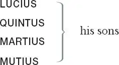
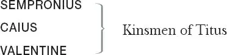
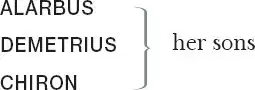

The Lamentable Tragedy of Titus Andronicus
Romans
SATURNINUS , the deceased Emperor's eldest son, who succeeds as Emperor
BASSIANUS , his brother
TITUS , Andronicus, a noble general
LAVINIA , his daughter

MARCUS , his brother, a Tribune of the people
BOY/YOUNG LUCIUS , son of Lucius
PUBLIUS , son of Marcus Andronicus

EMILLIUS
A CAPTAIN
A MESSENGER
A NURSE
A CLOWN
A LORD
Senators, Tribunes, Soldiers and Attendants
Goths
TAMORA , Queen of the Goths, later Empress of Rome, married to Saturninus

AARON , a Moor, Tamora’s lover
Soldiers
Act 1
Scene 1 1 / running scene 1
Flourish 2 . Enter the Tribunes 3 and Senators, aloft 4 . And then enter Saturninus 5 and his followers at one door [below], and Bassianus and his followers at the other, with Drum and Colours 6
SATURNINUS Noble patricians 7 , patrons 8 of my right,
Defend the justice of my cause with arms.
And countrymen, my loving followers,
Plead my successive 9 title with your swords.
I was the first-born son that 10 was the last
That wore the imperial diadem 11 of Rome:
Then let my father's honours 12 live in me,
Nor wrong mine age with this indignity.
BASSIANUS Romans, friends, followers, favourers of my right,
If ever Bassianus, Caesar's son,
Were gracious 13 in the eyes of royal Rome,
Keep 14 then this passage to the Capitol 15 ,
And suffer not 16 dishonour to approach
Th'imperial seat, to virtue consecrate 17 ,
To justice, continence 18 and nobility:
But let desert 19 in pure election 20 shine,
And, Romans, fight for freedom in your choice.
Enter Marcus Andronicus, aloft, with the crown
MARCUS Princes, that strive by factions and by friends
Ambitiously for rule and empery 21 ,
Know that the people of Rome, for whom we stand
A special party 22 , have by common voice 23
In election for the Roman empery,
Chosen Andronicus, surnamèd 24 Pius 25
For many good and great deserts 26 to Rome:
A nobler man, a braver warrior,
Lives not this day within the city walls.
He by the senate is accited 27 home
From weary wars against the barbarous Goths,
That 28 with his sons, a terror to our foes,
Hath yoked 29 a nation strong, trained up in arms.
Ten years are spent since first he undertook
This cause of Rome and chastisèd with arms
Our enemies' pride: five times he hath returned
Bleeding to Rome, bearing his valiant sons
In coffins from the field,
And now at last, laden with horror's spoils,
Returns the good Andronicus to Rome,
Renownèd Titus, flourishing 30 in arms.
Let us entreat, by honour of his name,
Whom worthily you would have now succeed 31 ,
And in the Capitol and senate's right,
Whom you pretend 32 to honour and adore,
That you withdraw you and abate your strength,
Dismiss your followers and, as suitors 33 should,
Plead your deserts 34 in peace and humbleness.
SATURNINUS How fair 35 the tribune speaks to calm my thoughts!
BASSIANUS Marcus Andronicus, so I do affy 36
In thy uprightness and integrity,
And so I love and honour thee and thine,
Thy noble brother Titus and his sons,
And her to whom my thoughts are humbled all 37 ,
Gracious Lavinia, Rome's rich ornament,
That I will here dismiss my loving friends,
And to my fortunes and the people's favour
Commit my cause in balance to be weighed.
Exeunt [his ] Soldiers
SATURNINUS Friends, that have been thus forward in 38 my right,
I thank you all and here dismiss you all,
And to the love and favour of my country
Commit myself, my person and the cause.
[Exeunt his Soldiers ]
Rome, be as just and gracious unto me
As I am confident and kind 39 to thee.
Open the gates and let me in.
BASSIANUS Tribunes, and me, a poor competitor 40 .
Flourish. They [Saturninus and Bassianus] go up into the senate house. Enter a Captain
CAPTAIN Romans, make way: the good Andronicus,
Patron 41 of virtue, Rome's best champion 42 ,
Successful in the battles that he fights,
With honour and with fortune is returned
From whence he circumscribèd 43 with his sword
And brought to yoke, the enemies of Rome.
Sound drums and trumpets, and then enter two of Titus' sons [Martius and Mutius]. After them, two men bearing a coffin covered with black, then two other sons [Lucius and Quintus]. After them, Titus Andronicus [in a chariot], and then Tamora 44 , Queen of Goths, and her two sons Chiron and Demetrius, with Aaron 45 the Moor 46 and others, as many as can be. They set down the coffin and Titus speaks
TITUS Hail, Rome, victorious in thy mourning weeds 47 !
Lo, as the bark 48 that hath discharged his freight
Returns with precious lading 49 to the bay
From whence at first she weighed her anchorage 50 ,
Cometh Andronicus, bound with laurel boughs,
To resalute his country with his tears,
Tears of true joy for his return to Rome.
Thou 51 great defender of this Capitol,
Stand gracious to 52 the rites that we intend.
Romans, of five and twenty valiant sons,
Half of the number that King Priam 53 had,
Behold the poor remains, alive and dead!
These that survive, let Rome reward with love:
These that I bring unto their latest 54 home,
With 55 burial amongst their ancestors.
Here Goths have given me leave 56 to sheathe my sword.
Titus, unkind 57 and careless 58 of thine own,
Why suffer'st thou thy sons unburied yet
To hover on the dreadful shore of Styx 59 ?
Make way to lay them by their brethren.
They open the tomb
There greet in silence, as the dead are wont 60 ,
And sleep in peace, slain in your country's wars.
O sacred receptacle of my joys,
Sweet cell 61 of virtue and nobility,
How many sons of mine hast thou in store,
That thou wilt never render to me more 62 !
LUCIUS Give us the proudest prisoner of the Goths,
That we may hew 63 his limbs, and on a pile
Ad manus fratrum 64 sacrifice his flesh
Before this earthly prison of their bones,
That so 65 the shadows 66 be not unappeased,
Nor we disturbed with prodigies 67 on earth.
TITUS I give him you, the noblest that survives,
The eldest son of this distressèd queen.
TAMORA Stay, Roman brethren, gracious 68 conqueror,
↓ Kneels ↓
Victorious Titus, rue 69 the tears I shed,
A mother's tears in passion 70 for her son:
And if thy sons were ever dear to thee,
O, think my sons to be as dear to me.
Sufficeth 71 not that we are brought to Rome
To beautify thy triumphs 72 and return,
Captive to thee and to thy Roman yoke?
But must my sons be slaughtered in the streets
For valiant doings in their country's cause?
O, if to fight for king and commonweal
Were piety in thine, it is in these.
Andronicus, stain not thy tomb with blood.
Wilt thou draw near the nature of the gods?
Draw near them then in being merciful:
Sweet mercy is nobility's true badge.
Thrice-noble Titus, spare my first-born son.
TITUS Patient 73 yourself, madam, and pardon me.
These are the brethren whom you Goths beheld
Alive and dead, and for their brethren slain
Religiously they ask a sacrifice:
To this your son is marked, and die he must,
To appease their groaning shadows that are gone.
LUCIUS Away with him, and make a fire straight 74 ,
And with our swords, upon a pile of wood,
Let's hew his limbs till they be clean 75 consumed.
Exeunt Sons [Lucius, Quintus, Martius and Mutius] with Alarbus
TAMORA O cruel, irreligious piety!
Rises
CHIRON Was ever Scythia 76 half so barbarous?
DEMETRIUS Oppose 77 not Scythia to ambitious Rome.
Alarbus goes to rest and we survive
To tremble under Titus' threat'ning looks.
Then, madam, stand resolved, but hope withal 78
The self-same gods that armed the Queen of Troy
With opportunity of sharp revenge
Upon the Thracian tyrant in his tent 79
May favour Tamora, the Queen of Goths —
When Goths were Goths and Tamora was queen —
To quit 80 the bloody wrongs upon her foes.
Enter the Sons of Andronicus again
LUCIUS See, lord and father, how we have performed
Our Roman rites: Alarbus' limbs are lopped,
And entrails 81 feed the sacrificing fire,
Whose smoke like incense doth perfume the sky.
Remaineth nought but to inter our brethren
And with loud 'larums 82 welcome them to Rome.
TITUS Let it be so, and let Andronicus
Make this his latest 83 farewell to their souls.
Flourish. Then sound trumpets, and lay the coffins in the tomb
In peace and honour rest you here, my sons:
Rome's readiest champions, repose you here in rest,
Secure from worldly chances and mishaps.
Here lurks no treason, here no envy 84 swells,
Here grow no damnèd grudges, here are no storms,
No noise, but silence and eternal sleep:
In peace and honour rest you here, my sons.
Enter Lavinia
LAVINIA In peace and honour live Lord Titus long:
My noble lord and father, live in fame 85 !
Lo, at this tomb my tributary 86 tears
I render for my brethren's obsequies 87 ,
And at thy feet I kneel with tears of joy
Kneels
Shed on the earth for thy return to Rome.
O, bless me here with thy victorious hand,
Whose fortune Rome's best citizens applaud.
TITUS Kind Rome, that hast thus lovingly reserved
The cordial 88 of mine age to glad my heart.
Lavinia, live, outlive thy father's days
And fame's eternal date, for virtue's praise 89 .
Lavinia rises
[Enter Marcus, below]
MARCUS Long live Lord Titus, my belovèd brother,
Gracious triumpher in the eyes of Rome!
TITUS Thanks, gentle 90 tribune, noble brother Marcus.
MARCUS And welcome, nephews, from successful wars,
You that survive and you that sleep in fame.
Fair lords, your fortunes are alike in all 91 ,
That in your country's service drew your swords:
But safer triumph 92 is this funeral pomp
That hath aspired 93 to Solon's happiness 94
And triumphs over chance in honour's bed 95 .
Titus Andronicus, the people of Rome,
Whose friend in justice thou hast ever been,
Send thee by me, their tribune and their trust 96 ,
This palliament 97 of white and spotless hue,
And name thee in election for the empire
With these our late-deceasèd emperor's sons:
Be candidatus 98 then and put it on,
Offers a robe
And help to set a head on headless Rome.
TITUS A better head her glorious body fits 99
Than his that shakes for age and feebleness.
What, should I don this robe and trouble you?
Be chosen with proclamations today,
Tomorrow yield up rule, resign my life
And set abroad 100 new business for you all?
Rome, I have been thy soldier forty years,
And led my country's strength successfully,
And buried one and twenty valiant sons,
Knighted in field, slain manfully in arms
In right and service 101 of their noble country:
Give me a staff of honour for mine age,
But not a sceptre to control the world.
Upright he held it, lords, that held it last.
MARCUS Titus, thou shalt obtain and ask 102 the empery.
SATURNINUS Proud and ambitious tribune, canst thou tell?
TITUS Patience, Prince Saturninus—
SATURNINUS Romans, do me right.
Patricians, draw your swords and sheathe them not
Till Saturninus be Rome's emperor.
Andronicus, would 103 thou wert shipped to hell,
Rather than rob me of the people's hearts.
LUCIUS Proud Saturnine, interrupter of the good
That noble-minded Titus means to thee.
TITUS Content thee, prince, I will restore to thee
The people's hearts, and wean them from themselves 104 .
BASSIANUS Andronicus, I do not flatter thee,
But honour thee, and will do till I die:
My faction if thou strengthen with thy friends,
I will most thankful be, and thanks to men
Of noble minds is honourable meed 105 .
TITUS People of Rome, and noble tribunes here,
I ask your voices and your suffrages 106 ,
Will you bestow them friendly on Andronicus?
TRIBUNES To gratify the good Andronicus
And gratulate 107 his safe return to Rome,
The people will accept whom he admits 108 .
TITUS Tribunes, I thank you, and this suit 109 I make,
That you create 110 our emperor's eldest son,
Lord Saturnine, whose virtues will, I hope,
Reflect on Rome as Titan 111 's rays on earth,
And ripen justice in this commonweal:
Then if you will elect by my advice,
Crown him and say, 'Long live our emperor!'
MARCUS With voices and applause of every sort,
Patricians and plebeians, we create
Lord Saturninus Rome's great emperor,
And say, 'Long live our Emperor Saturnine!'
A long flourish till they come down
SATURNINUS Titus Andronicus, for thy favours done
To us in our election this day,
I give thee thanks in part of thy deserts 112 ,
And will with deeds requite thy gentleness 113 :
And, for an onset 114 , Titus, to advance
Thy name and honourable family,
Lavinia will I make my emperess,
Rome's royal mistress, mistress of my heart,
And in the sacred Pantheon 115 her espouse:
Tell me, Andronicus, doth this motion 116 please thee?
TITUS It doth, my worthy lord, and in this match
I hold me 117 highly honoured of 118 your grace,
And here in sight of Rome to Saturnine,
King and commander of our commonweal,
The wide world's emperor, do I consecrate
My sword, my chariot and my prisoners,
Presents well worthy Rome's imperial lord:
Receive them then, the tribute that I owe,
Titus' sword, chariot and prisoners are given to Saturninus
Mine honour's ensigns 119 humbled at thy feet.
SATURNINUS Thanks, noble Titus, father of my life.
How proud I am of thee and of thy gifts,
Rome shall record, and when I do forget
The least of these unspeakable 120 deserts,
Romans forget your fealty 121 to me.
TITUS Now, madam, are you prisoner to an emperor,
To Tamora
To him that for 122 your honour and your state 123 ,
Will use 124 you nobly and your followers.
SATURNINUS A goodly lady, trust me, of the hue 125
Aside?
That I would choose, were I to choose anew.—
Clear up, fair queen, that cloudy countenance:
To Tamora
Though chance of war hath wrought this change of cheer 126 ,
Thou com'st not to be made a scorn in Rome:
Princely shall be thy usage every way.
Rest 127 on my word, and let not discontent
Daunt all your hopes: madam, he comforts 128 you
Can make you greater than the queen of Goths.—
Lavinia, you are not displeased with this?
LAVINIA Not I, my lord, sith 129 true nobility
Warrants 130 these words in princely courtesy.
SATURNINUS Thanks, sweet Lavinia.— Romans, let us go.
Ransomless here we set our prisoners free:
Proclaim our honours, lords, with trump and drum.
Sound music; prisoners released
BASSIANUS Lord Titus, by your leave, this maid is mine.
Seizes Lavinia
TITUS How, sir? Are you in earnest then, my lord?
BASSIANUS Ay, noble Titus, and resolved withal 131
To do myself this reason 132 and this right.
MARCUS 'Suum cuique' 133 is our Roman justice:
This prince in justice seizeth but his own.
LUCIUS And that he will, and shall, if Lucius live.
TITUS Traitors, avaunt 134 ! Where is the emperor's guard?—
Treason, my lord: Lavinia is surprised 135 !
SATURNINUS Surprised? By whom?
BASSIANUS By him that justly may
Bear his betrothed from all the world away.
MUTIUS Brothers, help to convey her hence away,
And with my sword I'll keep this door safe.
[Exeunt Bassianus, Lavinia, Marcus, Martius, Quintus ]
TITUS Follow, my lord, and I'll soon bring her back.
[Exeunt Saturninus and Goths ]
MUTIUS My lord, you pass not here.
TITUS What, villain boy, barr'st me my way in Rome?
He kills him
MUTIUS Help, Lucius, help 136 !
LUCIUS My lord, you are unjust, and, more than so:
In wrongful quarrel 137 you have slain your son.
TITUS Nor 138 thou, nor he, are any sons of mine:
My sons would never so dishonour me.
Traitor, restore Lavinia to the emperor.
LUCIUS Dead, if you will, but not to be his wife
That is another's lawful promised love.
[Exit ]
Enter aloft the Emperor with Tamora and her two sons, and Aaron the Moor
SATURNINUS No, Titus, no, the emperor needs her not,
Nor her, nor thee, nor any of thy stock.
I'll trust by leisure 139 him that mocks me once,
Thee never, nor thy traitorous haughty sons,
Confederates all thus to dishonour me.
Was none 140 in Rome to make a stale 141
But Saturnine? Full well, Andronicus,
Agree these deeds with that proud brag of thine,
That said'st I begged the empire at thy hands.
TITUS O, monstrous! What reproachful words are these?
SATURNINUS But go thy ways, go give that changing piece 142
To him that flourished 143 for her with his sword.
A valiant son-in-law thou shalt enjoy,
One fit to bandy 144 with thy lawless sons,
To ruffle 145 in the commonwealth of Rome.
TITUS These words are razors to my wounded heart.
SATURNINUS And therefore, lovely Tamora, Queen of Goths,
That like the stately Phoebe 146 'mongst her nymphs
Dost overshine 147 the gallant'st 148 dames of Rome,
If thou be pleased with this my sudden choice,
Behold, I choose thee, Tamora, for my bride,
And will create thee emperess of Rome,
Speak, queen of Goths, dost thou applaud my choice?
And here I swear by all the Roman gods,
Sith priest and holy water are so near
And tapers 149 burn so bright and everything
In readiness for Hymenaeus 150 stand,
I will not resalute the streets of Rome,
Or climb my palace, till from forth this place
I lead espoused my bride along with me.
TAMORA And here in sight of heaven to Rome I swear,
If Saturnine advance the Queen of Goths,
She will a handmaid be to his desires,
A loving nurse, a mother to his youth.
SATURNINUS Ascend, fair queen, Pantheon 151 . Lords, accompany
Your noble emperor and his lovely bride,
Sent by the heavens for Prince Saturnine,
Whose wisdom hath her fortune conquerèd 152 :
There shall we consummate our spousal rites.
Exeunt all. [Titus remains ]
TITUS I am not bid 153 to wait upon this bride.
Titus, when wert thou wont 154 to walk alone,
Dishonoured thus, and challengèd 155 of wrongs?
Enter Marcus and Titus' sons [Lucius, Quintus and Martius ]
MARCUS O Titus, see! O, see what thou hast done!
In a bad quarrel slain a virtuous son.
TITUS No, foolish tribune, no. No son of mine,
Nor thou, nor these, confed'rates in the deed
That hath dishonoured all our family:
Unworthy brother, and unworthy sons.
LUCIUS But let us give him burial as becomes 156 :
Give Mutius burial with our brethren.
TITUS Traitors, away! He rests not in this tomb.
This monument five hundred years hath stood,
Which I have sumptuously re-edified 157 :
Here none but soldiers and Rome's servitors 158
Repose in fame — none basely slain in brawls.
Bury him where you can, he comes not here.
MARCUS My lord, this is impiety in you:
My nephew Mutius' deeds do plead for him,
He must be buried with his bretheren 159 .
TITUS' TWO SONS 160 And shall, or him we will accompany.
TITUS 'And shall'? What villain was it that spake that word?
TITUS' SON He that would vouch 161 it in any place but here.
TITUS What, would you bury him in my despite 162 ?
MARCUS No, noble Titus, but entreat of thee
To pardon Mutius and to bury him.
TITUS Marcus, even thou hast struck upon my crest 163 ,
And with these boys mine honour thou hast wounded.
My foes I do repute 164 you every one,
So trouble me no more, but get you gone.
FIRST SON He is not himself, let us withdraw.
SECOND SON Not I, till Mutius' bones be buried.
The brother [Marcus] and the sons kneel
MARCUS Brother, for in that name doth nature plead—
SECOND SON Father, and in that name doth nature speak—
TITUS Speak thou no more, if all the rest will speed 165 .
MARCUS Renownèd Titus, more than half my soul—
LUCIUS Dear father, soul and substance of us all—
MARCUS Suffer 166 thy brother Marcus to inter
His noble nephew here in virtue's nest,
That died in honour and Lavinia's cause.
Thou art a Roman, be not barbarous.
The Greeks upon advice did bury Ajax
That slew himself, and wise Laertes' son
Did graciously plead for his funerals 167 :
Let not young Mutius then, that was thy joy,
Be barred his entrance here.
TITUS Rise, Marcus, rise.
The dismall'st 168 day is this that e'er I saw:
To be dishonoured by my sons in Rome!
Well, bury him, and bury me the next.
They put him in the tomb
LUCIUS There lie thy bones, sweet Mutius, with thy friends,
Till we with trophies 169 do adorn thy tomb.
MARCUS and TITUS' SONS No man shed tears for noble Mutius:
He lives in fame that died in virtue's cause.
Exeunt. [Titus and Marcus remain ]
MARCUS My lord, to step out of these sudden dumps 170 ,
How comes it that the subtle 171 Queen of Goths
Is of a sudden thus advanced in Rome?
TITUS I know not, Marcus, but I know it is 172 —
Whether by device 173 or no — the heavens can tell.
Is she not then beholding 174 to the man
That brought her for this high good turn so far?
MARCUS Yes, and will nobly him remunerate.
Flourish. Enter the Emperor, Tamora and her two sons with the Moor at one door. Enter at the other door Bassianus and Lavinia with others [Titus' three sons ]
SATURNINUS So, Bassianus, you have played your prize 175 :
God give you joy, sir, of your gallant bride.
BASSIANUS And you of yours, my lord. I say no more,
Nor wish no less, and so I take my leave.
SATURNINUS Traitor, if Rome have law or we have power,
Thou and thy faction shall repent this rape 176 .
BASSIANUS 'Rape' call you it, my lord, to seize my own,
My true-betrothèd love and now my wife?
But let the laws of Rome determine all:
Meanwhile I am possessed of that 177 is mine.
SATURNINUS 'Tis good 178 , sir: you are very short with us.
But if we live we'll be as sharp 179 with you.
BASSIANUS My lord, what I have done, as best I may,
Answer 180 I must, and shall do with my life.
Only thus much I give your grace to know:
By all the duties that I owe to Rome,
This noble gentleman, Lord Titus here,
Is in opinion 181 and in honour wronged,
That in the rescue of Lavinia
With his own hand did slay his youngest son
In zeal to you, and highly moved to wrath
To be controlled 182 in that he frankly 183 gave:
Receive him then to favour, Saturnine,
That hath expressed himself in all his deeds
A father and a friend to thee and Rome.
TITUS Prince Bassianus, leave to plead 184 my deeds:
'Tis thou and those 185 that have dishonoured me.
Rome and the righteous heavens be my judge
Kneels
How I have loved and honoured Saturnine!
TAMORA My worthy lord, if ever Tamora
To Saturninus
Were gracious in those princely eyes of thine,
Then hear me speak indifferently 186 for all,
And at my suit, sweet, pardon what is past.
SATURNINUS What, madam, be dishonoured openly,
And basely put it up 187 without revenge?
TAMORA Not so, my lord. The gods of Rome forfend 188
I should be author to dishonour 189 you.
But on mine honour dare I undertake 190
For good Lord Titus' innocence in all,
Whose fury not dissembled speaks his griefs 191 :
Then at my suit look graciously on him.
Lose not so noble a friend on vain suppose 192 ,
Nor with sour looks afflict his gentle heart.—
My lord, be ruled by me, be won at last,
Aside to Saturninus
Dissemble 193 all your griefs and discontents.
You are but newly planted in your throne:
Lest then the people, and patricians too,
Upon a just survey 194 take Titus' part,
And so supplant you for ingratitude,
Which Rome reputes to be a heinous sin,
Yield at entreats 195 — and then let me alone 196 :
I'll find a day to massacre them all,
And raze 197 their faction and their family,
The cruel father and his traitorous sons
To whom I suèd 198 for my dear son's life,
And make them know what 'tis to let a queen
Kneel in the streets and beg for grace in vain.—
Come, come, sweet emperor.— Come, Andronicus —
Aloud
Take up 199 this good old man, and cheer the heart
That dies in tempest of thy angry frown.
SATURNINUS Rise, Titus, rise: my empress hath prevailed.
TITUS I thank your majesty and her, my lord:
Rises
These words, these looks, infuse new life in me.
TAMORA Titus, I am incorporate in 200 Rome,
A Roman now adopted happily 201 ,
And must advise the emperor for his good.
This day all quarrels die, Andronicus:
And let it be mine honour, good my lord,
That I have reconciled your friends and you.—
For 202 you, Prince Bassianus, I have passed
My word and promise to the emperor,
That you will be more mild and tractable.—
And fear not, lords, and you, Lavinia:
By my advice, all humbled on your knees,
You shall ask pardon of his majesty.
Titus' s sons kneel
LUCIUS We do, and vow to heaven and to his highness
That what we did was mildly as we might,
Tend'ring 203 our sister's honour and our own.
MARCUS That on mine honour here I do protest 204 .
Kneels
SATURNINUS Away, and talk not: trouble us no more.
TAMORA Nay, nay, sweet emperor, we must all be friends:
The tribune and his nephews kneel for grace,
I will not be denied: sweet heart, look back.
SATURNINUS Marcus, for thy sake and thy brother's here,
And at my lovely Tamora's entreats,
I do remit these young men's heinous faults.—
[Marcus and Titus' sons] stand up
Lavinia, though you left me like a churl 205 ,
I found a friend 206 , and sure as death I swore
I would not part a bachelor from the priest.
Come, if the emperor's court can feast two brides,
You are my guest, Lavinia, and your friends.
This day shall be a love-day 207 , Tamora.
TITUS Tomorrow, an 208 it please your majesty
To hunt the panther and the hart 209 with me,
With horn and hound we'll give your grace bonjour 210 .
SATURNINUS Be it so, Titus, and gramercy 211 too.
Flourish. Exeunt
Act 2
Scene 1 / running scene 1 continues
Enter Aaron alone
AARON Now climbeth Tamora Olympus 212 ' top,
Safe out of fortune's shot, and sits aloft,
Secure of 213 thunder's crack or lightning flash,
Advanced above pale envy's threat'ning reach.
As when the golden sun salutes the morn,
And, having gilt 214 the ocean with his beams,
Gallops 215 the zodiac in his glistering 216 coach
And overlooks 217 the highest-peering hills,
So Tamora.
Upon her wit 218 doth earthly honour wait,
And virtue stoops and trembles at her frown.
Then, Aaron, arm thy heart and fit thy thoughts
To mount aloft with thy imperial mistress,
And mount her pitch 219 whom thou in triumph 220 long
Hast prisoner held, fettered in amorous chains
And faster bound to Aaron's charming 221 eyes
Than is Prometheus tied to Caucasus 222 .
Away with slavish weeds 223 and idle 224 thoughts:
I will be bright, and shine in pearl and gold
To wait upon this new-made emperess.
To wait, said I? — To wanton 225 with this queen 226 ,
This goddess, this Semiramis 227 , this nymph,
This siren 228 that will charm Rome's Saturnine
And see his shipwreck and his commonweal's.
Hallo! What storm is this?
Enter Chiron and Demetrius, braving 229
DEMETRIUS Chiron, thy years want 230 wit, thy wit wants edge 231
And manners to intrude where I am graced 232
And may, for aught 233 thou know'st, affected 234 be.
CHIRON Demetrius, thou dost overween 235 in all,
And so in this, to bear me down 236 with braves 237 .
'Tis not the difference of a year or two
Makes me less gracious or thee more fortunate:
I am as able and as fit as thou
To serve 238 , and to deserve my mistress' grace,
And that my sword upon thee shall approve 239 ,
And plead my passions for Lavinia's love.
AARON Clubs, clubs! 240 These lovers will not keep the peace.
Aside
DEMETRIUS Why, boy, although our mother, unadvised 241 ,
Gave you a dancing-rapier 242 by your side,
Are you so desperate grown to threat your friends 243 ?
Go to 244 : have your lath 245 glued within your sheath
Till you know better how to handle it.
CHIRON Meanwhile, sir, with the little skill I have,
Full well shalt thou perceive how much I dare.
DEMETRIUS Ay, boy, grow ye so brave 246 ?
They draw
AARON Why, how now, lords?
Comes forward
So near 247 the emperor's palace dare you draw
And maintain such a quarrel openly?
Full well I wot 248 the ground of all this grudge:
I would not for a million of gold
The cause were known to them it most concerns,
Nor would your noble mother for much more
Be so dishonoured in the court of Rome.
For shame, put up 249 .
DEMETRIUS Not I, till I have sheathed
My rapier in his bosom and withal
Thrust these reproachful speeches down his throat
That he hath breathed in my dishonour here.
CHIRON For that I am prepared and full resolved,
Foul-spoken coward, that thund'rest with thy tongue,
And with thy weapon nothing dar'st perform!
AARON Away, I say.
Now, by the gods that warlike Goths adore,
This petty brabble 250 will undo 251 us all.
Why, lords, and think you not how dangerous
It is to jet 252 upon a prince's right?
What, is Lavinia then become so loose 253 ,
Or Bassianus so degenerate,
That for her love such quarrels may be broached
Without controlment 254 , justice, or revenge?
Young lords, beware! And should the empress know
This discord's ground 255 , the music would not please.
CHIRON I care not, I, knew she 256 and all the world:
I love Lavinia more than all the world.
DEMETRIUS Youngling, learn thou to make some meaner 257 choice:
Lavinia is thine elder brother's hope.
AARON Why, are ye mad? Or know ye not in Rome
How furious and impatient they be,
And cannot brook 258 competitors in love?
I tell you, lords, you do but plot your deaths
By this device 259 .
CHIRON Aaron, a thousand deaths 260 would I propose 261
T'achieve her whom I do love.
AARON T'achieve her how?
DEMETRIUS Why mak'st thou it so strange 262 ?
She is a woman, therefore may be wooed:
She is a woman, therefore may be won:
She is Lavinia, therefore must be loved.
What, man, more water glideth by the mill
Than wots the miller of, and easy it is
Of a cut loaf to steal a shive 263 , we know:
Though Bassianus be the emperor's brother,
Better than he have worn Vulcan's badge 264 .
AARON Ay, and as good as Saturninus may.
Aside
DEMETRIUS Then why should he despair that knows to court it 265
With words, fair looks and liberality?
What, hast not thou full often struck a doe
And borne her cleanly by the keeper's nose 266 ?
AARON Why then, it seems some certain snatch 267 or so
Would serve your turns 268 .
CHIRON Ay, so the turn were served.
DEMETRIUS Aaron, thou hast hit it 269 .
AARON Would you had hit it too,
Then should not we be tired with this ado 270 .
Why, hark ye, hark ye, and are you such fools
To square for 271 this? Would it offend you then
That both should speed?
CHIRON Faith, not me.
DEMETRIUS Nor me, so 272 I were one.
AARON For shame, be friends, and join for that you jar 273 :
'Tis policy 274 and stratagem must do
That you affect 275 , and so must you resolve
That what you cannot as you would achieve,
You must perforce accomplish as you may 276 .
Take this of me: Lucrece 277 was not more chaste
Than this Lavinia, Bassianus' love.
A speedier course than ling'ring languishment 278
Must we pursue, and I have found the path.
My lords, a solemn 279 hunting is in hand:
There will the lovely Roman ladies troop 280 :
The forest walks are wide and spacious,
And many unfrequented plots 281 there are
Fitted by kind 282 for rape and villainy.
Single 283 you thither then this dainty 284 doe,
And strike her home 285 by force, if not by words:
This way or not at all stand 286 you in hope.
Come, come, our empress, with her sacred 287 wit
To villainy and vengeance consecrate,
Will we acquaint with all that we intend,
And she shall file our engines 288 with advice
That will not suffer you to square yourselves 289 ,
But to your wishes' height advance you both.
The emperor's court is like the house of Fame 290 ,
The palace full of tongues, of eyes, of ears.
The woods are ruthless, dreadful 291 , deaf and dull:
There speak and strike 292 , brave boys, and take your turns 293 :
There serve your lusts, shadowed from heaven's eye,
And revel in Lavinia's treasury 294 .
CHIRON Thy counsel, lad, smells of no cowardice.
DEMETRIUS Sit fas aut nefas 295 , till I find the streams
To cool this heat, a charm to calm their fits,
Per Stygia, per manes vehor 296 .
Exeunt
Scene 2 297 / running scene 2
Enter Titus Andronicus and his three sons, making a noise with hounds and horns, and arcus
TITUS The hunt is up 298 , the morn is bright and grey,
The fields are fragrant and the woods are green:
Uncouple 299 here, and let us make a bay 300
And wake the emperor and his lovely bride,
And rouse the prince, and ring a hunter's peal 301 ,
That all the court may echo with the noise.
Sons, let it be your charge 302 , as it is ours,
To attend the emperor's person carefully:
I have been troubled in my sleep this night,
But dawning day new comfort hath inspired.
Wind 303 horns. Here a cry of hounds and wind horns in a peal, then enter Saturninus, Tamora, Bassianus, Lavinia, Chiron, Demetrius and their Attendants
Many good morrows to your majesty:
Madam, to you as many and as good.
I promised your grace a hunter's peal.
SATURNINUS And you have rung it lustily 304 , my lords,
Somewhat too early for new-married ladies.
BASSIANUS Lavinia, how 305 say you?
LAVINIA I say, no:
I have been broad awake two hours and more.
SATURNINUS Come on then, horse and chariots let us have,
And to our sport.— Madam, now shall ye see
To Tamora
Our Roman hunting.
MARCUS I have dogs, my lord,
Will rouse the proudest panther in the chase 306
And climb the highest promontory 307 top.
TITUS And I have horse will follow where the game
Makes way and runs like swallows o'er the plain.
DEMETRIUS Chiron, we hunt not, we, with horse nor hound,
But hope to pluck a dainty doe to ground.
Exeunt
Scene 3 308 / running scene 3
Enter Aaron alone
With a bag of gold
AARON He that had wit would think that I had none,
To bury so much gold under a tree
And never after to inherit 309 it.
Let him that thinks of me so abjectly
Know that this gold must coin 310 a stratagem
Which, cunningly effected, will beget 311
A very excellent piece of villainy:
And so repose, sweet gold, for their unrest
Hides the gold
That have their alms out of the empress' chest 312 .
Enter Tamora to the Moor
TAMORA My lovely Aaron, wherefore 313 look'st thou sad
When everything doth make a gleeful boast 314 ?
The birds chant melody on every bush,
The snake lies rollèd in the cheerful sun,
The green leaves quiver with the cooling wind
And make a chequered shadow on the ground:
Under their sweet shade, Aaron, let us sit,
And whilst the babbling echo mocks the hounds,
Replying shrilly to the well-tuned horns
As if a double hunt were heard at once,
Let us sit down and mark their yelping noise,
And after conflict 315 such as was supposed
The wand'ring prince and Dido 316 once enjoyed,
When with a happy 317 storm they were surprised
And curtained with a counsel-keeping 318 cave,
We may, each wreathèd in the other's arms,
Our pastimes done, possess a golden slumber,
Whiles hounds and horns and sweet melodious birds
Be unto us as is a nurse's song
Of lullaby to bring her babe asleep.
AARON Madam, though Venus 319 govern your desires,
Saturn 320 is dominator 321 over mine:
What signifies my deadly-standing 322 eye,
My silence and my cloudy melancholy,
My fleece of woolly hair that now uncurls
Even as an adder when she doth unroll
To do some fatal execution?
No, madam, these are no venereal 323 signs:
Vengeance is in my heart, death in my hand,
Blood and revenge are hammering in my head.
Hark Tamora, the empress of my soul,
Which never hopes 324 more heaven than rests in thee,
This is the day of doom for Bassianus:
His Philomel 325 must lose her tongue today,
Thy sons make pillage of her chastity
And wash their hands in Bassianus' blood.
See'st thou this letter? Take it up 326 , I pray thee,
And give the king this fatal-plotted scroll.
Now question me no more: we are espied.
Here comes a parcel 327 of our hopeful 328 booty,
Which dreads not yet their lives' destruction.
Enter Bassianus and Lavinia
At a distance
TAMORA Ah, my sweet Moor, sweeter to me than life!
AARON No more, great empress: Bassianus comes.
Be cross 329 with him, and I'll go fetch thy sons
To back thy quarrels, whatsoe'er they be.
[Exit ]
BASSIANUS Whom have we here? Rome's royal emperess,
Unfurnished of her well-beseeming troop 330 ?
Or is it Dian 331 , habited 332 like her,
Who hath abandonèd her holy groves
To see the general 333 hunting in this forest?
TAMORA Saucy 334 controller 335 of our private steps,
Had I the power that some say Dian had,
Thy temples should be planted presently 336
With horns, as was Actaeon 337 's, and the hounds
Should drive 338 upon thy new-transformèd limbs,
Unmannerly intruder as thou art.
LAVINIA Under your patience 339 , gentle 340 emperess,
'Tis thought you have a goodly gift in horning 341 ,
And to be doubted 342 that your Moor and you
Are singled forth 343 to try experiments 344 :
Jove 345 shield your husband from his hounds today —
'Tis pity they should take him for a stag.
BASSIANUS Believe me, queen, your swarth 346 Cimmerian 347
Doth make your honour of his body's hue,
Spotted, detested and abominable.
Why are you sequestered 348 from all your train 349 ,
Dismounted from your snow-white goodly steed,
And wandered hither to an obscure plot,
Accompanied with a barbarous Moor,
If foul desire had not conducted you?
LAVINIA And being intercepted in your sport,
Great reason 350 that my noble lord be rated 351
For sauciness.— I pray you let us hence,
To Bassianus
And let her joy 352 her raven-coloured love:
This valley fits the purpose passing 353 well.
BASSIANUS The king my brother shall have note of this.
LAVINIA Ay, for these slips 354 have made him noted 355 long:
Good king, to be so mightily abused.
TAMORA Why, I have patience to endure all this.
Enter Chiron and Demetrius
DEMETRIUS How now, dear sovereign and our gracious mother,
Why doth your highness look so pale and wan?
TAMORA Have I not reason, think you, to look pale?
These two have 'ticed 356 me hither to this place:
A barren detested vale you see it is.
The trees, though summer, yet forlorn and lean,
O'ercome 357 with moss and baleful 358 mistletoe:
Here never shines the sun, here nothing breeds
Unless the nightly owl or fatal 359 raven 360 .
And when they showed me this abhorrèd pit,
They told me here at dead time of the night,
A thousand fiends, a thousand hissing snakes,
Ten thousand swelling toads 361 , as many urchins 362 ,
Would make such fearful and confusèd cries
As any mortal body hearing it
Should straight 363 fall mad, or else die suddenly 364 .
No sooner had they told this hellish tale,
But straight they told me they would bind me here
Unto the body of a dismal 365 yew
And leave me to this miserable death.
And then they called me foul adulteress,
Lascivious Goth 366 , and all the bitterest terms
That ever ear did hear to such effect:
And had you not by wondrous fortune come,
This vengeance on me had they executed.
Revenge it as you love your mother's life,
Or be ye not henceforth called my children.
DEMETRIUS This is a witness that I am thy son.
Stab him
CHIRON And this for me, struck home to show my strength.
He also stabs Bassianus
LAVINIA Ay, come, Semiramis 367 , nay, barbarous Tamora,
For no name fits thy nature but thy own.
TAMORA Give me thy poniard 368 : you shall know, my boys
Your mother's hand shall right your mother's wrong.
DEMETRIUS Stay, madam, here is more belongs to her:
First thrash 369 the corn, then after burn the straw.
This minion 370 stood upon 371 her chastity,
Upon her nuptial vow, her loyalty,
And with that painted 372 hope braves your mightiness.
And shall she carry this unto her grave?
CHIRON An if 373 she do, I would I were an eunuch.
Drag hence her husband to some secret hole
And make his dead trunk pillow to our lust.
TAMORA But when ye have the honey 374 we desire,
Let not this wasp outlive 375 , us both to sting.
CHIRON I warrant 376 you, madam, we will make that sure.—
Come, mistress, now perforce 377 we will enjoy
That nice-preservèd honesty 378 of yours.
LAVINIA O Tamora, thou bear'st a woman's face—
TAMORA I will not hear her speak, away with her!
LAVINIA Sweet lords, entreat her hear me but a word.
DEMETRIUS Listen, fair madam: let it be your glory
To Tamora
To see her tears, but be your heart to them
As unrelenting flint to drops of rain.
LAVINIA When did the tiger's young ones teach the dam 379 ?
O, do not learn 380 her wrath: she taught it thee.
The milk thou suck'st from her did turn to marble:
Even at thy teat thou hadst thy tyranny 381 .
Yet every mother breeds not sons alike 382 :—
Do thou entreat her show a woman pity.
To Chiron
CHIRON What, wouldst thou have me prove myself a bastard?
LAVINIA 'Tis true, the raven 383 doth not hatch a lark 384 .
Yet have I heard — O, could I find it 385 now! —
The lion moved with pity did endure
To have his princely paws 386 pared all away.
Some say that ravens foster forlorn 387 children
The whilst their own birds 388 famish in their nests:
O, be to me though thy hard heart say no,
Nothing so kind, but something pitiful 389 !
TAMORA I know not what it 390 means.— Away with her!
LAVINIA O, let me teach thee for my father's sake,
That gave thee life when well he might have slain thee.
Be not obdurate, open thy deaf ears.
TAMORA Hadst thou in person ne'er offended me,
Even for his sake am I pitiless.
Remember, boys, I poured forth tears in vain
To save your brother from the sacrifice,
But fierce Andronicus would not relent.
Therefore away with her and use 391 her as you will:
The worse to her, the better loved of me.
LAVINIA O Tamora, be called a gentle queen,
Clings to Tamora
And with thine own hands kill me in this place,
For 'tis not life that I have begged so long:
Poor I was slain when Bassianus died.
TAMORA What begg'st thou, then? Fond 392 woman, let me go.
LAVINIA 'Tis present 393 death I beg, and one thing more
That womanhood 394 denies 395 my tongue to tell:
O, keep me from their worse-than-killing lust,
And tumble 396 me into some loathsome pit
Where never man's eye may behold my body.
Do this, and be a charitable murderer.
TAMORA So should I rob my sweet sons of their fee 397 .
No, let them satisfy their lust on thee.
DEMETRIUS Away, for thou hast stayed 398 us here too long.
To Lavinia
LAVINIA No grace? No womanhood? Ah, beastly creature,
The blot and enemy to our general name 399 ,
Confusion 400 fall—
CHIRON Nay, then I'll stop your mouth.—
Grabs her
Bring thou her husband:
To Demetrius
This is the hole where Aaron bid us hide him.
[Demetrius throws Bassianus' body into the pit, he and Chiron then exeunt, dragging off Lavinia ]
TAMORA Farewell, my sons: see that you make her sure 401 .
Ne'er let my heart know merry cheer indeed,
Till all the Andronici 402 be made away 403 .
Now will I hence to seek my lovely Moor,
And let my spleenful 404 sons this trull 405 deflower.
Exit
Enter Aaron with two of Titus' sons [Quintus and Martius ]
AARON Come on, my lords, the better foot before 406 :
Straight will I bring you to the loathsome pit
Where I espied the panther fast asleep.
QUINTUS My sight is very dull 407 , whate'er it bodes.
MARTIUS And mine, I promise you. Were it not for shame,
Well could I leave our sport to sleep awhile.
Falls into the pit
QUINTUS What art thou fallen? What subtle 408 hole is this,
Whose mouth is covered with rude-growing 409 briers
Upon whose leaves are drops of new-shed blood
As fresh as morning's dew distilled on flowers?
A very fatal place it seems to me.
Speak, brother, hast thou hurt thee with the fall?
MARTIUS O brother, with the dismall'st object 410 hurt
Martius speaks from below
That ever eye with sight made heart lament!
AARON Now will I fetch the king to find them here,
Aside
That he thereby may have a likely guess
How these were they that made away his brother.
Exit Aaron
MARTIUS Why dost not comfort me and help me out
From this unhallowed 411 and blood-stainèd hole?
QUINTUS I am surprisèd 412 with an uncouth 413 fear,
A chilling sweat o'er-runs my trembling joints:
My heart suspects more than mine eye can see.
MARTIUS To prove thou hast a true-divining heart,
Aaron and thou look down into this den,
And see a fearful sight of blood and death.
QUINTUS Aaron is gone and my compassionate 414 heart
Will not permit mine eyes once to behold
The thing whereat it trembles by surmise 415 .
O, tell me how it is, for ne'er till now
Was I a child to fear I know not what.
MARTIUS Lord Bassianus lies embrewèd 416 here
All on a heap 417 , like to the slaughtered lamb,
In this detested, dark, blood-drinking pit.
QUINTUS If it be dark, how dost thou know 'tis he?
MARTIUS Upon his bloody finger he doth wear
A precious ring, that lightens all the hole 418 ,
Which like a taper in some monument 419
Doth shine upon the dead man's earthly 420 cheeks
And shows the ragged entrails of the pit:
So pale did shine the moon on Pyramus 421
When he by night lay bathed in maiden blood 422 .
O brother, help me with thy fainting hand —
If fear hath made thee faint, as me it hath —
Out of this fell 423 devouring receptacle,
As hateful as Cocytus 424 ' misty mouth.
QUINTUS Reach me thy hand that I may help thee out
Reaches into the pit
Or, wanting 425 strength to do thee so much good,
I may be plucked into the swallowing womb 426
Of this deep pit, poor Bassianus' grave.
I have no strength to pluck thee to the brink.
MARTIUS Nor I no strength to climb without thy help.
QUINTUS Thy hand once more: I will not loose again
Till thou art here aloft or I below.
Thou canst not come to me: I come to thee.
Both fall in
Enter the Emperor, Aaron the Moor [and Attendants ]
SATURNINUS Along with me: I'll see what hole is here,
And what he is that now is leapt into it.—
Say who art thou that lately didst descend
Speaks into the pit
Into this gaping hollow of the earth?
MARTIUS The unhappy son of old Andronicus,
Brought hither in a most unlucky hour
To find thy brother Bassianus dead.
SATURNINUS My brother dead? I know thou dost but jest:
He and his lady both are at the lodge
Upon the north side of this pleasant chase.
'Tis not an hour since I left him there.
MARTIUS We know not where you left him all alive,
But, out alas 427 , here have we found him dead.
Enter Tamora [with Attendants, ] Andronicus and Lucius
TAMORA Where is my lord the king?
SATURNINUS Here, Tamora, though gride 428 with killing grief.
TAMORA Where is thy brother Bassianus?
SATURNINUS Now to the bottom dost thou search 429 my wound:
Poor Bassianus here lies murderèd.
TAMORA Then all too late I bring this fatal writ 430 ,
The complot 431 of this timeless 432 tragedy,
And wonder greatly that man's face can fold 433
In pleasing smiles such murderous tyranny.
She giveth Saturnine a letter
SATURNINUS 'An if we miss to meet him handsomely 434
Saturninus reads the letter
Sweet huntsman — Bassianus 'tis we mean —
Do thou so much as dig the grave for him:
Thou know'st our meaning. Look for thy reward
Among the nettles at the elder tree 435
Which overshades the mouth of that same pit
Where we decreed 436 to bury Bassianus.
Do this, and purchase 437 us thy lasting friends.'
O Tamora, was ever heard the like?
This is the pit and this the elder tree.—
Look, sirs, if you can find the huntsman out
That should 438 have murdered Bassianus here.
AARON My gracious lord, here is the bag of gold.
Finds the bag
SATURNINUS Two of thy whelps, fell curs of bloody kind 439 ,
To Titus
Have here bereft my brother of his life.—
Sirs, drag them from the pit unto the prison:
There let them bide until we have devised
Some never-heard-of torturing pain for them.
TAMORA What, are they in this pit? O wondrous 440 thing!
↓ Attendants may pull Quintus and Martius from the pit ↓
How easily murder is discoverèd.
TITUS High emperor, upon my feeble knee
Kneels
I beg this boon with tears not lightly shed,
That this fell fault of my accursèd sons,
Accursèd if the faults be proved in them—
SATURNINUS If it be proved? You see it is apparent 441 .
Who found this letter? Tamora, was it you?
TAMORA Andronicus himself did take it up.
TITUS I did, my lord. Yet let me be their bail,
For by my father's reverend tomb I vow
They shall be ready at your highness' will
To answer their suspicion 442 with their lives.
SATURNINUS Thou shalt not bail them: see thou follow me.—
↓ Titus rises ↓
Some bring the murdered body, some the murderers:
Let them not speak a word: the guilt is plain,
For, by my soul, were there worse end than death,
That end upon them should be executed.
TAMORA Andronicus, I will entreat the king:
Fear not 443 thy sons, they shall do well enough.
TITUS Come, Lucius, come. Stay not to talk with them.
Exeunt
Scene 4 / running scene 3 continues
Enter the Empress' sons [Demetrius and Chiron] with Lavinia, her hands cut off and her tongue cut out, and ravished 444
DEMETRIUS So, now go tell, an if thy tongue can speak,
Who 'twas that cut thy tongue and ravished thee.
CHIRON Write down thy mind, bewray 445 thy meaning so,
An if thy stumps will let thee, play the scribe.
DEMETRIUS See how with signs and tokens she can scrawl 446 .
CHIRON Go home, call for sweet water 447 , wash thy hands.
DEMETRIUS She hath no tongue to call, nor hands to wash,
And so let's leave her to her silent walks.
CHIRON An 'twere my cause 448 , I should go hang myself.
DEMETRIUS If thou hadst hands to help thee knit 449 the cord.
Exeunt [Chiron and Demetrius ]
Wind horns. Enter Marcus from hunting to Lavinia
Lavinia runs away
MARCUS Who is this? My niece that flies away so fast!
Cousin 450 , a word: where is your husband?
Lavinia turns back
If I do dream, would all my wealth would wake me;
If I do wake, some planet strike 451 me down
That I may slumber in eternal sleep.
Speak, gentle niece, what stern ungentle hands
Have lopped and hewed and made thy body bare
Of her two branches, those sweet ornaments,
Whose circling shadows 452 kings have sought to sleep in,
And might not gain so great a happiness
As half thy love? Why dost not speak to me?
Alas, a crimson river of warm blood,
Lavinia opens her mouth
Like to a bubbling fountain stirred with wind,
Doth rise and fall between thy rosèd lips,
Coming and going with thy honey breath.
But sure some Tereus 453 hath deflowered thee
And, lest thou shouldst detect 454 him, cut thy tongue.
Ah, now thou turn'st away thy face for shame,
And notwithstanding all this loss of blood,
As from a conduit 455 with three issuing spouts,
Yet do thy cheeks look red as Titan 456 's face
Blushing to be encountered with a cloud.
Shall I speak for thee? Shall I say 'tis so?
O, that I knew thy heart, and knew the beast,
That I might rail at 457 him, to ease my mind.
Sorrow concealèd, like an oven stopped 458 ,
Doth burn the heart to cinders where it is.
Fair Philomela, she but lost her tongue,
And in a tedious 459 sampler 460 sewed her mind.
But, lovely niece, that mean 461 is cut from thee:
A craftier Tereus hast thou met withal,
And he hath cut those pretty fingers off,
That could have better sewed than Philomel.
O, had the monster seen those lily hands
Tremble like aspen-leaves upon a lute
And make the silken strings delight to kiss them,
He would not then have touched them for his life.
Or had he heard the heavenly harmony
Which that sweet tongue hath made,
He would have dropped his knife and fell asleep,
As Cerberus at the Thracian poet's feet 462 .
Come, let us go, and make thy father blind,
For such a sight will blind a father's eye.
One hour's storm will drown the fragrant meads 463 :
What will whole months of tears thy father's eyes?
Do not draw back, for we will mourn with thee.
O, could our mourning ease thy misery!
Exeunt
Act 3
Scene 1 464 / running scene 4
Enter the Judges and Senators with Titus' two sons [Martius and Quintus] bound, passing on the stage to the place of execution, and Titus going before, pleading
TITUS Hear me, grave fathers 465 ! Noble tribunes, stay!
For pity of mine age, whose youth was spent
In dangerous wars whilst you securely slept,
For all my blood 466 in Rome's great quarrel 467 shed,
For all the frosty nights that I have watched 468 ,
And for these bitter tears which now you see
Filling the agèd wrinkles in my cheeks,
Be pitiful to my condemnèd sons,
Whose souls is not corrupted as 'tis thought.
For two and twenty sons I never wept,
Because they died in honour's lofty bed.
Andronicus lieth down and the Judges pass by him
For these, two tribunes, in the dust I write
My heart's deep languor 469 and my soul's sad tears:
Let my tears stanch 470 the earth's dry appetite,
My sons' sweet blood will make it shame 471 and blush.
Exeunt . [Titus remains ]
O earth, I will befriend thee more with rain
That shall distil 472 from these two ancient ruins 473
Than youthful April shall with all his showers.
In summer's drought I'll drop upon thee still 474 :
In winter with warm tears I'll melt the snow
And keep eternal springtime on thy face,
So 475 thou refuse to drink my dear sons' blood.
Enter Lucius, with his weapon drawn
O reverend tribunes, O gentle, agèd men,
Unbind my sons, reverse the doom 476 of death,
And let me say, that never wept before,
My tears are now prevailing orators 477 .
LUCIUS O noble father, you lament in vain:
The tribunes hear you not, no man is by,
And you recount your sorrows to a stone.
TITUS Ah, Lucius, for thy brothers let me plead.
Grave tribunes, once more I entreat of you—
LUCIUS My gracious lord, no tribune hears you speak.
TITUS Why, tis no matter, man: if they did hear,
They would not mark 478 me, or if they did mark,
They would not pity me.
Therefore I tell my sorrows bootless 479 to the stones,
Who, though they cannot answer my distress,
Yet in some sort they are better than the tribunes
For that they will not intercept 480 my tale:
When I do weep, they humbly at my feet
Receive my tears and seem to weep with me,
And were they but attirèd 481 in grave 482 weeds 483 ,
Rome could afford 484 no tribune like to these.
A stone is as soft wax, tribunes more hard than stones:
A stone is silent, and offendeth not,
And tribunes with their tongues doom men to death.
But wherefore stand'st thou with thy weapon drawn?
Rises
LUCIUS To rescue my two brothers from their death,
For which attempt the judges have pronounced
My everlasting doom of banishment.
TITUS O happy 485 man, they have befriended thee.
Why, foolish Lucius, dost thou not perceive
That Rome is but a wilderness of tigers?
Tigers must prey, and Rome affords no prey
But me and mine: how happy art thou, then,
From these devourers to be banishèd!
But who comes with our brother Marcus here?
Enter Marcus and Lavinia
MARCUS Titus, prepare thy noble eyes to weep,
Or if not so, thy noble heart to break:
I bring consuming sorrow to thine age.
TITUS Will it consume me? Let me see it then.
MARCUS This was thy daughter.
TITUS Why, Marcus, so she is.
LUCIUS Ay me, this object 486 kills me.
Falls to his knees
TITUS Faint-hearted boy, arise and look upon her.—
Lucius rises
Speak, Lavinia, what accursèd hand
Hath made thee handless in thy father's sight?
What fool hath added water to the sea?
Or brought a faggot to bright-burning Troy?
My grief was at the height before thou cam'st,
And now like Nilus 487 it disdaineth 488 bounds.
Give me a sword, I'll chop off my hands too,
For they have fought for Rome, and all in vain:
And they have nursed this woe, in feeding life 489 :
In bootless prayer have they been held up,
And they have served me to effectless 490 use:
Now all the service I require of them
Is that the one will help to cut the other.
'Tis well, Lavinia, that thou hast no hands,
For hands to do Rome service is but vain.
LUCIUS Speak, gentle sister: who hath martyred 491 thee?
MARCUS O, that delightful engine 492 of her thoughts
That blabbed 493 them with such pleasing eloquence,
Is torn from forth that pretty hollow cage
Where, like a sweet melodious bird, it sung
Sweet varied notes, enchanting every ear!
LUCIUS O, say thou for her: who hath done this deed?
MARCUS O, thus I found her, straying in the park 494 ,
Seeking to hide herself, as doth the deer
That hath received some unrecuring 495 wound.
TITUS It was my dear 496 , and he that wounded her
Hath hurt me more than had he killed me dead,
For now I stand as one upon a rock
Environed 497 with a wilderness of sea,
Who marks the waxing 498 tide grow wave by wave,
Expecting ever 499 when some envious 500 surge
Will in his brinish 501 bowels swallow him.
This way to death my wretched sons are gone:
Here stands my other son, a banished man,
And here my brother, weeping at my woes.
But that which gives my soul the greatest spurn 502
Is dear Lavinia, dearer than my soul.
Had I but seen thy picture in this plight,
It would have madded me. What shall I do
Now I behold thy lively 503 body so?
Thou hast no hands to wipe away thy tears,
Nor tongue to tell me who hath martyred thee:
Thy husband he is dead, and for his death
Thy brothers are condemned, and dead by this 504 .—
Look, Marcus, ah, son Lucius, look on her!
When I did name her brothers, then fresh tears
Stood on her cheeks, as doth the honey-dew 505
Upon a gathered lily almost withered.
MARCUS Perchance she weeps because they killed her husband,
Perchance because she knows them innocent.
TITUS If they did kill thy husband, then be joyful,
Because the law hath ta'en revenge on them.
No, no, they would not do so foul a deed:
Witness the sorrow that their sister makes.
Gentle Lavinia, let me kiss thy lips
Or make some signs how I may do thee ease 506 :
Shall thy good uncle and thy brother Lucius,
And thou and I sit round about some fountain,
Looking all downwards to behold our cheeks,
How they are stained like meadows yet not dry,
With miry 507 slime left on them by a flood?
And in the fountain shall we gaze so long
Till the fresh taste be taken from that clearness 508 ,
And made a brine-pit with our bitter tears?
Or shall we cut away our hands like thine?
Or shall we bite our tongues and in dumb shows 509
Pass the remainder of our hateful days?
What shall we do? Let us that have our tongues
Plot some device 510 of further miseries
To make us wondered at in time to come.
LUCIUS Sweet father, cease your tears, for at your grief
See how my wretched sister sobs and weeps.
MARCUS Patience, dear niece.— Good Titus, dry thine eyes.
Gives a handkerchief
TITUS Ah, Marcus, Marcus, brother, well I wot 511
Thy napkin 512 cannot drink a tear of mine,
For thou, poor man, hast drowned it with thine own.
LUCIUS Ah, my Lavinia, I will wipe thy cheeks.
TITUS Mark, Marcus, mark! I understand her signs:
Had she a tongue to speak, now would she say
That to her brother which I said to thee.
His napkin with his true tears all bewet
Can do no service on her sorrowful cheeks.
O, what a sympathy 513 of woe is this:
As far from help as Limbo 514 is from bliss!
Enter Aaron the Moor alone
AARON Titus Andronicus, my lord the emperor
Sends thee this word: that if thou love thy sons,
Let Marcus, Lucius, or thyself, old Titus,
Or any one of you, chop off your hand
And send it to the king: he for the same
Will send thee hither both thy sons alive —
And that shall be the ransom for their fault.
TITUS O gracious emperor, O gentle Aaron!
Did ever raven sing so like a lark
That gives sweet tidings of the sun's uprise?
With all my heart, I'll send the emperor my hand.
Good Aaron, wilt thou help to chop it off?
LUCIUS Stay, father, for that noble hand of thine
That hath thrown down so many enemies
Shall not be sent. My hand will serve the turn:
My youth can better spare my blood than you,
And therefore mine shall save my brothers' lives.
MARCUS Which of your hands hath not defended Rome,
And reared aloft the bloody battle-axe,
Writing destruction on the enemy's castle 515 ?
O, none of both 516 but are of high desert.
My hand hath been but idle: let it serve
To ransom my two nephews from their death,
Then have I kept it to a worthy end.
AARON Nay, come, agree whose hand shall go along,
For fear they die before their pardon come.
MARCUS My hand shall go.
LUCIUS By heaven, it shall not go!
TITUS Sirs, strive no more: such withered herbs as these
Are meet 517 for plucking up, and therefore mine.
LUCIUS Sweet father, if I shall be thought thy son,
Let me redeem my brothers both from death.
MARCUS And for our father's sake and mother's care,
Now let me show a brother's love to thee.
TITUS Agree between you: I will spare 518 my hand.
LUCIUS Then I'll go fetch an axe.
MARCUS But I will use the axe.
Exeunt [Lucius and Marcus ]
TITUS Come hither, Aaron, I'll deceive them both:
Lend me thy hand and I will give thee mine.
AARON If that be called deceit, I will be honest
Aside
And never whilst I live deceive men so.
But I'll deceive you in another sort,
And that you'll say 519 , ere half an hour pass.
He cuts off Titus' hand
Enter Lucius and Marcus again
TITUS Now stay your strife 520 : what shall be is dispatched.
Good Aaron, give his majesty my hand:
Tell him it was a hand that warded 521 him
From thousand dangers: bid him bury it:
More hath it merited: that 522 let it have.
As for my sons, say I account of 523 them
As jewels purchased at an easy price,
And yet dear 524 too, because I bought mine own 525 .
AARON I go, Andronicus, and for thy hand
Look 526 by and by to have thy sons with thee.—
Their heads I mean. O, how this villainy
Aside
Doth fat 527 me with the very thoughts of it!
Let fools do good and fair 528 men call for grace.
Aaron will have his soul black like his face.
Exit
TITUS O, here I lift this one hand up to heaven
And bow this feeble ruin 529 to the earth.
Kneels
If any power pities wretched tears,
To that I call!— What, wilt thou kneel with me?
Lavinia kneels
Do then, dear heart, for heaven shall hear our prayers,
Or with our sighs we'll breathe the welkin 530 dim,
And stain the sun with fog, as sometime clouds
When they do hug him in their melting bosoms.
MARCUS O brother, speak with possibilities 531 ,
And do not break into these deep extremes.
TITUS Is not my sorrow deep, having no bottom?
Then be my passions 532 bottomless with them.
MARCUS But yet let reason govern thy lament.
TITUS If there were reason for these miseries,
Then into limits could I bind my woes:
When heaven doth weep, doth not the earth o'erflow 533 ?
If the winds rage doth not the sea wax mad,
Threat'ning the welkin with his big-swoll'n face?
And wilt thou have a reason for this coil 534 ?
I am the sea. Hark how her 535 sighs do blow!
She is the weeping welkin, I the earth:
Then must my sea be movèd 536 with her sighs,
Then must my earth with her continual tears
Become a deluge overflowed and drowned,
For why 537 my bowels 538 cannot hide her woes,
But like a drunkard must I vomit them.
Then give me leave, for losers will have leave
To ease their stomachs 539 with their bitter tongues.
Enter a Messenger with two heads and a hand
Titus and Lavinia may rise here
MESSENGER Worthy Andronicus, ill art thou repaid
For that good hand thou sent'st the emperor.
Here are the heads of thy two noble sons,
And here's thy hand, in scorn to thee sent back:
Sets down the heads and hand
Thy griefs their sports 540 , thy resolution mocked,
That 541 woe is me to think upon thy woes
More than remembrance of my father's death.
Exit
MARCUS Now let hot Aetna 542 cool in Sicily,
And be my heart an ever-burning hell!
These miseries are more than may be borne.
To weep with them that weep doth ease some deal 543 ,
But sorrow flouted 544 at is double death.
LUCIUS Ah, that this sight should make so deep a wound,
And yet detested life not shrink 545 thereat!
That ever death should let life bear his name 546 ,
Where life hath no more interest but to breathe!
Lavinia kisses the heads
MARCUS Alas, poor heart, that kiss is comfortless
As frozen water to a starvèd 547 snake.
TITUS When will this fearful slumber have an end?
MARCUS Now farewell flattery 548 , die Andronicus:
Thou dost not slumber. See thy two sons' heads,
Thy warlike hand, thy mangled daughter here,
Thy other banished son with this dear 549 sight
Struck pale and bloodless, and thy brother, I,
Even like a stony image, cold and numb.
Ah, now no more will I control 550 thy griefs:
Rend off thy silver hair, thy other hand
Gnawing with thy teeth, and be this dismal sight
The closing up of our most wretched eyes.
Now is a time to storm. Why art thou still?
TITUS Ha, ha, ha!
MARCUS Why dost thou laugh? It fits not with this hour.
TITUS Why? I have not another tear to shed:
Besides, this sorrow is an enemy
And would usurp upon my wat'ry eyes
And make them blind with tributary 551 tears.
Then which way shall I find Revenge's cave?
For these two heads do seem to speak to me
And threat 552 me I shall never come to bliss
Till all these mischiefs 553 be returned again
Even in their throats that have committed them.
Come, let me see what task I have to do.
You heavy 554 people, circle me about,
That I may turn me to each one of you
And swear unto my soul to right your wrongs.
They make a vow
The vow is made. Come, brother, take a head,
And in this hand the other I will bear.
And Lavinia, thou shalt be employed in these things:
Bear thou my hand, sweet wench, between thy teeth.
As for thee, boy, go get thee from my sight:
Thou art an exile, and thou must not stay:
Hie to the Goths and raise an army there,
And if you love me, as I think you do,
Let's kiss and part, for we have much to do.
Exeunt. Lucius remains
LUCIUS Farewell Andronicus, my noble father,
The woefull'st man that ever lived in Rome.
Farewell, proud Rome, till Lucius come again.
He loves his pledges 555 dearer than his life.
Farewell, Lavinia, my noble sister,
O, would thou wert as thou tofore 556 hast been!
But now nor 557 Lucius nor Lavinia lives
But 558 in oblivion and hateful griefs.
If Lucius live, he will requite your wrongs
And make proud Saturnine and his empress
Beg at the gates, like Tarquin and his queen 559 .
Now will I to the Goths and raise a power 560 ,
To be revenged on Rome and Saturnine.
Exit Lucius
Scene 2 561 / running scene 5
A banquet 562
Enter [Titus ] Andronicus, Marcus, Lavinia and the Boy [Young Lucius ]
TITUS So, so, now sit, and look you eat no more
Than will preserve just so much strength in us
As will revenge these bitter woes of ours.
Marcus, unknit that sorrow-wreathen knot 563 :
Thy niece and I, poor creatures, want 564 our hands
And cannot passionate 565 our tenfold grief
With folded arms. This poor right hand of mine
Is left to tyrannize 566 upon my breast,
Who 567 , when my heart, all mad with misery,
Beats in this hollow prison of my flesh,
Then thus I thump it down.—
Thou map 568 of woe, that thus dost talk in signs,
To Lavinia
When thy poor heart beats with outrageous 569 beating,
Thou canst not strike it thus to make it still.
Wound it with sighing 570 , girl, kill it with groans,
Or get some little knife between thy teeth
And just against thy heart make thou a hole,
That all the tears that thy poor eyes let fall
May run into that sink 571 , and soaking in
Drown the lamenting fool 572 in sea-salt tears.
MARCUS Fie, brother, fie! Teach her not thus to lay
Such violent hands upon her tender 573 life.
TITUS How now? Has sorrow made thee dote 574 already?
Why, Marcus, no man should be mad but I.
What violent hands can she lay on her life?
Ah, wherefore dost thou urge the name of hands
To bid Aeneas 575 tell the tale twice o'er
How Troy was burnt and he made miserable?
O, handle not the theme, to talk of hands,
Lest we remember still 576 that we have none.
Fie, fie, how franticly 577 I square 578 my talk,
As if we should forget we had no hands
If Marcus did not name the word of hands.
Come, let's fall to 579 , and, gentle girl, eat this.
Here is no drink! Hark, Marcus, what she says:
I can interpret all her martyred signs —
She says she drinks no other drink but tears,
Brewed with her sorrow, meshed 580 upon her cheeks.—
Speechless complainer 581 , I will learn thy thought.
In thy dumb action 582 will I be as perfect 583
As begging hermits in their holy prayers:
Thou shalt not sigh, nor hold thy stumps to heaven,
Nor wink 584 , nor nod, nor kneel, nor make a sign,
But I of these will wrest an alphabet
And by still 585 practice learn to know thy meaning.
BOY Good grandsire 586 , leave these bitter deep laments:
Make my aunt merry with some pleasing tale.
MARCUS Alas, the tender 587 boy in passion moved
Doth weep to see his grandsire's heaviness 588 .
TITUS Peace, tender sapling, thou art made of tears,
And tears will quickly melt thy life away.
Marcus strikes the dish with a knife
What dost thou strike at, Marcus, with thy knife?
MARCUS At that that I have killed, my lord: a fly.
TITUS Out on thee 589 , murderer! Thou kill'st my heart:
Mine eyes are cloyed with view of tyranny:
A deed of death done on the innocent
Becomes not Titus' brother. Get thee gone:
I see thou art not for my company.
MARCUS Alas, my lord, I have but killed a fly.
TITUS 'But'? How if that fly had a father and mother?
How would he hang his slender gilded wings,
And buzz lamenting doings 590 in the air!
Poor harmless fly,
That with his pretty buzzing melody
Came here to make us merry, and thou hast killed him.
MARCUS Pardon me, sir, it was a black ill-favoured 591 fly,
Like to the empress' Moor: therefore I killed him.
TITUS O, O, O!
Then pardon me for reprehending thee,
For thou hast done a charitable deed.
Give me thy knife, I will insult on 592 him,
Flattering myself as if 593 it were the Moor
Come hither purposely to poison me.—
There's for thyself, and that's for Tamora.
Takes the knife and strikes
Ah, sirrah 594 !
Yet, I think, we are not brought so low
But that between us we can kill a fly
That comes in likeness of a coal-black Moor.
MARCUS Alas, poor man! Grief has so wrought on 595 him
He takes false shadows for true substances.
TITUS Come, take away 596 . Lavinia, go with me:
I'll to thy closet 597 , and go read with thee
Sad stories chancèd 598 in the times of old.
Come, boy, and go with me: thy sight is young,
And thou shalt read when mine begin to dazzle 599 .
Exeunt
Act 4
Scene 1 600 / running scene 6
Enter Young Lucius and Lavinia running after him, and the Boy flies from her, with his books under his arm
He drops the books
Enter Titus and Marcus
BOY Help, grandsire, help! My aunt Lavinia
Follows me everywhere, I know not why.
Good uncle Marcus, see how swift she comes.
Alas, sweet aunt, I know not what you mean.
MARCUS Stand by me, Lucius: do not fear thy aunt.
TITUS She loves thee, boy, too well to do thee harm.
BOY Ay, when my father was in Rome she did.
MARCUS What means my niece Lavinia by these signs?
TITUS Fear her not, Lucius — somewhat 601 doth she mean:
See, Lucius, see how much she makes of thee:
Somewhither would she have thee go with her.
Ah, boy, Cornelia 602 never with more care
Read to her sons than she hath read to thee
Sweet poetry and Tully's Orator 603 .
Canst thou not guess wherefore she plies 604 thee thus?
BOY My lord, I know not, I, nor can I guess,
Unless some fit or frenzy do possess her,
For I have heard my grandsire say full oft
Extremity of griefs would make men mad,
And I have read that Hecuba of Troy 605
Ran mad through sorrow: that made me to fear,
Although, my lord, I know my noble aunt
Loves me as dear as e'er my mother did,
And would not, but in fury 606 , fright my youth,
Which made me down to throw my books and fly,
Causeless perhaps. But pardon me, sweet aunt:
And, madam, if my uncle Marcus go 607 ,
I will most willingly attend your ladyship.
MARCUS Lucius, I will.
Lavinia turns over the books with her stumps
TITUS How now, Lavinia?— Marcus, what means this?
Some book there is that she desires to see.
Which is it, girl, of these?— Open them, boy.—
But thou art deeper read, and better skilled 608 :
To Lavinia
Come, and take choice of all my library,
And so beguile 609 thy sorrow till the heavens
Reveal the damned contriver of this deed.
What book?
Why lifts she up her arms in sequence 610 thus?
MARCUS I think she means that there was more than one
Confederate in the fact 611 . Ay, more there was,
Or else to heaven she heaves 612 them for revenge.
TITUS Lucius, what book is that she tosseth 613 so?
BOY Grandsire, 'tis Ovid's Metamorphosis:
My mother gave it me.
MARCUS For love of her that's gone,
Perhaps she culled 614 it from among the rest.
TITUS Soft 615 , so busily she turns the leaves!
Helps her
What would she find? Lavinia, shall I read?
This is the tragic tale of Philomel,
And treats of Tereus' treason and his rape —
And rape, I fear, was root of thine annoy 616 .
MARCUS See, brother, see: note how she quotes 617 the leaves.
TITUS Lavinia, wert thou thus surprised 618 , sweet girl,
Ravished and wronged as Philomela was,
Forced in the ruthless, vast 619 and gloomy woods?
Lavinia nods
See, see!
Ay, such a place there is, where we did hunt —
O, had we never, never hunted there! —
Patterned by that 620 the poet here describes,
By nature made for murders and for rapes.
MARCUS O, why should nature build so foul a den,
Unless the gods delight in tragedies 621 ?
TITUS Give signs, sweet girl — for here are none but friends —
What Roman lord it was durst do the deed.
Or slunk not Saturnine, as Tarquin erst 622 ,
That left the camp to sin in Lucrece' bed?
MARCUS Sit down, sweet niece: brother, sit down by me.
Apollo, Pallas, Jove or Mercury 623
Inspire me, that I may this treason find.
My lord, look here: look here, Lavinia.
He writes his name with his staff, and guides it with feet and mouth
This sandy plot is plain 624 : guide, if thou canst,
This after me 625 . I here have writ my name
Without the help of any hand at all.
Cursed be that heart that forced us to that shift 626 .
Write thou, good niece, and here display at last
What God will have discovered 627 for revenge.
Heaven guide thy pen to print thy sorrows plain,
That we may know the traitors and the truth!
She takes the staff in her mouth, and guides it with her stumps, and writes
TITUS O, do ye read, my lord, what she hath writ?
'Stuprum 628 , Chiron, Demetrius.'
MARCUS What, what? The lustful sons of Tamora
Performers of this heinous, bloody deed?
TITUS Magni dominator poli ,
Tam lentus audis scelera, tam lentus vides 629 ?
MARCUS O, calm thee, gentle lord, although I know
There is enough written upon this earth
To stir a mutiny in the mildest thoughts
And arm the minds of infants to exclaims 630 .
My lord, kneel down with me: Lavinia, kneel:
And kneel, sweet boy, the Roman Hector's hope 631 ,
They kneel
And swear with me — as, with the woeful fere 632
And father of that chaste dishonoured dame,
Lord Junius Brutus swore for Lucrece' rape —
That we will prosecute by good advice 633
Mortal revenge upon these traitorous Goths,
And see their blood, or die with this reproach 634 .
They rise
TITUS 'Tis sure enough, an 635 you knew how.
But if you hunt these bear-whelps, then beware:
The dam 636 will wake, and, if she wind 637 you once
She's with the lion 638 deeply still in league,
And lulls him whilst she playeth on her back 639 ,
And when he sleeps will she do 640 what she list 641 .
You are a young 642 huntsman, Marcus: let it alone,
And come. I will go get a leaf 643 of brass
And with a gad 644 of steel will write these words,
And lay it by. The angry northern wind
Will blow these sands, like Sibyl's leaves 645 abroad,
And where's your lesson, then? Boy, what say you?
BOY I say, my lord, that if I were a man,
Their mother's bedchamber should not be safe
For these bad bondmen 646 to the yoke of Rome.
MARCUS Ay, that's my boy. Thy father hath full oft
For his ungrateful country done the like.
BOY And, uncle, so will I, an if I live.
TITUS Come, go with me into mine armoury:
Lucius, I'll fit 647 thee, and withal 648 my boy
Shall carry from me to the empress' sons
Presents that I intend to send them both.
Come, come, thou'lt do thy message, wilt thou not?
BOY Ay, with my dagger in their bosoms, grandsire.
TITUS No, boy, not so: I'll teach thee another course.
Lavinia, come: Marcus, look to my house:
Lucius and I'll go brave it 649 at the court.
Ay, marry 650 , will we, sir, and we'll be waited on 651 .
Exeunt . [Marcus remains ]
MARCUS O heavens, can you hear a good man groan
And not relent or not compassion 652 him?
Marcus, attend him in his ecstasy 653
That hath more scars of sorrow in his heart
Than foemen's marks upon his battered shield,
But yet so just that he will not revenge.
Revenge, the heavens, for old Andronicus!
Exit
Scene 2 654 / running scene 7
Enter Aaron, Chiron and Demetrius at one door, and at another door Young Lucius and another [Attendant], with a bundle of weapons and verses writ upon them
CHIRON Demetrius, here's the son of Lucius:
He hath some message to deliver us.
AARON Ay, some mad message from his mad grandfather.
BOY My lords, with all the humbleness I may,
I greet your honours from Andronicus.—
And pray the Roman gods confound 655 you both.
Aside
DEMETRIUS Gramercy 656 , lovely Lucius. What's the news?
BOY That you are both deciphered 657 , that's the news,
Aside
For villains marked with rape.— May it please you,
To them
My grandsire, well advised 658 , hath sent by me
The goodliest weapons of his armoury
To gratify your honourable youth,
The hope of Rome, for so he bade me say,
And so I do, and with his gifts present
Your lordships, that, whenever you have need,
You may be armèd and appointed 659 well.
Attendant presents the weapons
And so I leave you both— like bloody villains.
Aside
Exeunt [Young Lucius and Attendant ]
DEMETRIUS What's here? A scroll, and written round about?
Let's see:
'Integer vitae, scelerisque purus ,
Reads
Non eget Mauri jaculis, nec arcu.' 660
CHIRON O, 'tis a verse in Horace, I know it well:
I read it in the grammar 661 long ago.
AARON Ay, just 662 : a verse in Horace, right, you have it.—
Now, what a thing it is to be an ass!
Aside
Here's no sound jest 663 ! The old man hath found their guilt,
And sends them weapons wrapped about with lines
That wound beyond their feeling to the quick 664 .
But were our witty 665 empress well afoot 666
She would applaud Andronicus' conceit 667 :
But let her rest in her unrest 668 awhile.—
And now, young lords, was't not a happy 669 star
To Chiron and Demetrius
Led us to Rome, strangers, and more than so,
Captives, to be advancèd to this height?
It did me good before the palace gate
To brave 670 the tribune in his brother's hearing.
DEMETRIUS But me more good to see so great a lord
Basely insinuate 671 and send us gifts.
AARON Had he not reason, Lord Demetrius?
Did you not use his daughter very friendly 672 ?
DEMETRIUS I would we had a thousand Roman dames
At such a bay 673 , by turn 674 to serve 675 our lust.
CHIRON A charitable wish and full of love.
AARON Here lacks but your mother for to say 'Amen'.
CHIRON And that would she for twenty thousand more 676 .
DEMETRIUS Come, let us go; and pray to all the gods
For our belovèd mother in her pains.
AARON Pray to the devils: the gods have given us over.
Aside?
Flourish
DEMETRIUS Why do the emperor's trumpets flourish thus?
CHIRON Belike 677 for joy the emperor hath a son.
DEMETRIUS Soft, who comes here?
Enter Nurse with a blackamoor child
The child hidden in her arms
NURSE Good morrow, lords.
O, tell me, did you see Aaron the Moor?
AARON Well, more 678 or less, or ne'er a whit 679 at all:
Here Aaron is, and what 680 with Aaron now?
NURSE O gentle Aaron, we are all undone 681 .
Now help, or woe betide thee evermore!
AARON Why, what a caterwauling dost thou keep!
What dost thou wrap and fumble in thine arms?
NURSE O, that which I would hide from heaven's eye,
Our empress' shame and stately Rome's disgrace!
She is delivered, lords, she is delivered.
AARON To whom?
NURSE I mean, she is brought abed.
AARON Well, God give her good rest! What hath he sent her?
NURSE A devil.
AARON Why, then she is the devil's dam: a joyful issue 682 .
NURSE A joyless, dismal, black, and sorrowful issue:
Here is the babe, as loathsome as a toad
Amongst the fair-faced breeders 683 of our clime 684 .
The empress sends it thee, thy stamp, thy seal 685 ,
And bids thee christen it with thy dagger's point.
AARON Out, you whore! Is black so base a hue?—
Sweet blowse 686 , you are a beauteous blossom, sure.
To the child
DEMETRIUS Villain, what hast thou done 687 ?
AARON That which thou canst not undo.
CHIRON Thou hast undone our mother.
AARON Villain, I have done thy mother.
DEMETRIUS And therein, hellish dog, thou hast undone.
Woe to her chance 688 , and damned her loathèd choice,
Accursed the offspring of so foul a fiend.
CHIRON It shall not live.
AARON It shall not die.
NURSE Aaron, it must: the mother wills it so.
AARON What, must it, nurse? Then let no man but I
Do execution on my flesh and blood.
DEMETRIUS I'll broach 689 the tadpole on my rapier's point.
Nurse, give it me: my sword shall soon dispatch it.
AARON Sooner this sword shall plough thy bowels up.
Draws his sword and takes the child
Stay, murderous villains! Will you kill your brother?
Now, by the burning tapers of the sky,
That shone so brightly when this boy was got 690 ,
He dies upon my scimitar's sharp point
That touches this my first-born son and heir.
I tell you, younglings, not Enceladus 691
With all his threat'ning band of Typhon 692 's brood,
Nor great Alcides 693 , nor the god of war 694 ,
Shall seize this prey out of his father's hands.
What, what, ye sanguine 695 , shallow-hearted boys!
Ye white-limed 696 walls, ye ale-house painted 697 signs!
Coal-black is better than another hue
In that it scorns to bear another hue,
For all the water in the ocean
Can never turn the swan's black legs to white,
Although she lave 698 them hourly in the flood 699 .
Tell the empress from me, I am of age
To keep mine own, excuse it how she can.
DEMETRIUS Wilt thou betray thy noble mistress thus?
AARON My mistress is my mistress, this 700 myself,
The vigour and the picture of my youth:
This before all the world do I prefer,
This maugre 701 all the world will I keep safe,
Or some of you shall smoke 702 for it in Rome.
DEMETRIUS By this our mother is forever shamed.
CHIRON Rome will despise her for this foul escape 703 .
NURSE The emperor, in his rage, will doom her death.
CHIRON I blush to think upon this ignomy 704 .
AARON Why, there's the privilege your beauty bears:
Fie, treacherous hue, that will betray with blushing
The close enacts 705 and counsels of the heart.
Here's a young lad framed 706 of another leer 707 :
Look how the black slave 708 smiles upon the father,
As who should say 709 'Old lad, I am thine own.'
He is your brother, lords, sensibly 710 fed
Of that self-blood 711 that first gave life to you,
And from that womb where you imprisoned were
He is enfranchisèd 712 and come to light.
Nay, he is your brother by the surer 713 side,
Although my seal be stampèd in his face.
NURSE Aaron, what shall I say unto the empress?
DEMETRIUS Advise thee 714 , Aaron, what is to be done,
And we will all subscribe to thy advice.
Save thou the child, so 715 we may all be safe.
AARON Then sit we down, and let us all consult.
My son and I will have the wind of 716 you.
Keep there: now talk at pleasure of your safety.
They sit
DEMETRIUS How many women saw this child of his?
To the Nurse
AARON Why, so, brave lords, when we join in league
I am a lamb: but if you brave the Moor,
The chafèd 717 boar, the mountain lioness,
The ocean swells not so as Aaron storms.—
But say again, how many saw the child?
To the Nurse
NURSE Cornelia the midwife and myself,
And none else but the delivered empress.
AARON The empress, the midwife, and yourself:
Two may keep counsel when the third's away.
Go to the empress, tell her this I said.
He kills her
Weke, weke! 718 So cries a pig preparèd to th'spit.
They all stand up
DEMETRIUS What mean'st thou, Aaron? Wherefore didst thou this?
AARON O Lord, sir, 'tis a deed of policy 719 :
Shall she live to betray this guilt of ours,
A long-tongued 720 babbling gossip? No, lords, no:
And now be it known to you my full intent.
Not far, one Muly lives, my countryman:
His wife but yesternight was brought to bed:
His child is like to her 721 , fair as you are.
Go pack 722 with him, and give the mother gold,
And tell them both the circumstance 723 of all,
And how by this their child shall be advanced,
And be receivèd for the emperor's heir,
And substituted in the place of mine,
To calm this tempest whirling in the court,
And let the emperor dandle him for his own.
Hark ye, lords, ye see I have given her physic 724 ,
And you must needs bestow 725 her funeral:
The fields are near and you are gallant grooms 726 .
This done, see that you take no longer days 727 ,
But send the midwife presently 728 to me.
The midwife and the nurse well made away,
Then let the ladies tattle what they please.
CHIRON Aaron, I see thou wilt not trust the air
With secrets.
DEMETRIUS For this care of Tamora,
Herself and hers are highly bound to thee.
Exeunt [Demetrius and Chiron with the body ]
AARON Now to the Goths, as swift as swallow flies,
There to dispose this treasure in mine arms,
And secretly to greet the empress' friends.
Come on, you thick-lipped slave, I'll bear you hence,
For it is you that puts us to our shifts 729 :
I'll make you feed on berries and on roots,
And feed on curds and whey 730 , and suck 731 the goat,
And cabin 732 in a cave, and bring you up
To be a warrior and command a camp.
Exit
Scene 3 733 / running scene 8
Enter Titus, Old Marcus, Young Lucius and other Gentlemen [Publius, Sempronius, Caius ] with bows and Titus bears the arrows with letters on the end of them
TITUS Come, Marcus, come, kinsmen: this is the way.
Sir Boy, let me see your archery.
Look ye draw home 734 enough, and 'tis there straight 735 .
Terras Astraea reliquit : 736 be you remembered 737 ,
Marcus, she's gone, she's fled.— Sirs, take you to your tools.
You, cousins 738 , shall go sound 739 the ocean,
And cast your nets:
Haply 740 you may find her in the sea,
Yet there's 741 as little justice as at land.
No, Publius and Sempronius, you must do it,
'Tis you must dig with mattock 742 and with spade,
And pierce the inmost centre of the earth.
Then, when you come to Pluto's region 743 ,
I pray you deliver him this petition.
Tell him, it is for justice and for aid,
And that it comes from old Andronicus,
Shaken with sorrows in ungrateful Rome.—
Ah, Rome! Well, well, I made thee miserable
What time 744 I threw the people's suffrages 745
On him that thus doth tyrannize o'er me.—
Go, get you gone, and pray be careful all,
And leave you not a man-of-war 746 unsearched:
This wicked emperor may have shipped her 747 hence,
And, kinsmen, then we may go pipe for 748 justice.
MARCUS O Publius, is not this a heavy case 749 ,
To see thy noble uncle thus distract 750 ?
PUBLIUS Therefore, my lords, it highly us concerns
By day and night t'attend him carefully 751
And feed his humour 752 kindly as we may,
Till time beget some careful 753 remedy.
MARCUS Kinsmen, his sorrows are past remedy.
Join with the Goths 754 and with revengeful war
Take wreak 755 on Rome for this ingratitude,
And vengeance on the traitor Saturnine.
TITUS Publius, how now? How now, my masters?
What, have you met with her 756 ?
PUBLIUS No, my good lord, but Pluto sends you word
If you will have Revenge from hell, you shall.
Marry, for 757 Justice, she is so employed,
He thinks with Jove in heaven or somewhere else,
So that perforce 758 you must needs stay 759 a time.
TITUS He doth me wrong to feed me with delays.
I'll dive into the burning lake 760 below
And pull her out of Acheron by the heels.
Marcus, we are but shrubs, no cedars we,
No big-boned men framed of the Cyclops 761 ' size,
But metal, Marcus, steel to the very back,
Yet wrung 762 with wrongs more than our backs can bear.
And sith 763 there's no justice in earth nor hell,
We will solicit heaven and move 764 the gods
To send down Justice for to 765 wreak our wrongs.
Come, to this gear 766 . You are a good archer, Marcus:
He gives them the arrows
'Ad Jovem ', that's for you: here, 'Ad Apollinem ':
'Ad Martem' 767 , that's for myself:
Here, boy, to Pallas: here, to Mercury:
To Saturn, Caius, not to Saturnine.
You were as good to shoot against the wind 768 .
To it, boy! Marcus, loose 769 when I bid.
Of 770 my word, I have written to effect:
There's not a god left unsolicited.
MARCUS Kinsmen, shoot all your shafts into the court:
We will afflict the emperor in his pride.
TITUS Now, masters, draw.
They draw and shoot
O, well said 771 , Lucius.
Good boy, in Virgo 772 's lap. Give it Pallas 773 .
MARCUS My lord, I aim a mile beyond the moon:
Your letter is with Jupiter by this.
TITUS Ha, ha!
Publius, Publius, what hast thou done?
See, see, thou hast shot off one of Taurus 774 ' horns.
MARCUS This was the sport, my lord: when Publius shot,
The bull, being galled 775 , gave Aries 776 such a knock
That down fell both the ram's horns 777 in the court,
And who should find them but the empress' villain 778 !
She laughed and told the Moor he should not choose
But give them to his master for a present.
TITUS Why, there it goes 779 : God give his lordship joy!
Enter the Clown 780 with a basket and two pigeons in it
News, news from heaven! Marcus, the post 781 is come.—
Sirrah, what tidings? Have you any letters?
Shall I have justice? What says Jupiter?
CLOWN Ho, the gibbet-maker 782 ! He says that he hath taken them down 783 again, for the
man must not be hanged till the next week.
TITUS But what says Jupiter, I ask thee?
CLOWN Alas, sir, I know not Jupiter: I never drank with him in all my life.
TITUS Why, villain, art not thou the carrier 784 ?
CLOWN Ay, of my pigeons, sir, nothing else.
TITUS Why, didst thou not come from heaven?
CLOWN From heaven? Alas, sir, I never came there: God forbid I should be so bold to press 785 to heaven in my young days. Why, I am going with my pigeons to the tribunal plebs 786 to take up 787 a matter of brawl betwixt my uncle and one of the emperial's 788 men.
MARCUS Why, sir, that is as fit as can be to serve for your oration 789 , and let him deliver the pigeons to the emperor from you.
To Titus
TITUS Tell me, can you deliver an oration to the emperor with a grace 790 ?
CLOWN Nay, truly, sir, I could never say grace in all my life.
TITUS Sirrah, come hither: make no more ado 791 ,
But give your pigeons to the emperor.
By me thou shalt have justice at his hands.
Hold 792 , hold — meanwhile here's money for thy charges 793 .
Give me pen and ink.
Writes
Sirrah, can you with a grace deliver a supplication 794 ?
CLOWN Ay, sir.
TITUS Then here is a supplication for you, and when you come to him, at the first approach you must kneel, then kiss his foot, then deliver up your pigeons, and then look for 795 your reward. I'll be at hand, sir: see you do it bravely 796 .
Gives the letter
CLOWN I warrant you, sir, let me alone 797 .
TITUS Sirrah, hast thou a knife? Come, let me see it.—
Here, Marcus, fold it in the oration—
For thou must take it like an humble suppliant.
To the Clown
And when thou hast given it the emperor,
Knock at my door, and tell me what he says.
CLOWN God be with you, sir. I will.
Exit
TITUS Come, Marcus, let us go.— Publius, follow me.
Exeunt
Scene 4 798 / running scene 8 continues
Enter Emperor and Empress and her two sons [and Attendants]. The Emperor brings the arrows in his hand that Titus shot at him
SATURNINUS Why, lords, what wrongs are these? Was ever seen
An emperor in Rome thus overborne 799 ,
Troubled, confronted thus, and for the extent 800
Of equal justice, used in such contempt?
My lords, you know, as know the mightful 801 gods,
However these disturbers of our peace
Buzz in the people's ears, there nought hath passed 802
But even 803 with law against the wilful sons
Of old Andronicus. And what an if
His sorrows have so overwhelmed his wits,
Shall we be thus afflicted in his wreaks 804 ,
His fits, his frenzy, and his bitterness?
And now he writes to heaven for his redress.
See, here's 'To Jove', and this 'To Mercury',
This 'To Apollo', this 'To the god of war':
Sweet scrolls to fly about the streets of Rome!
What's this but libelling against the senate
And blazoning 805 our injustice everywhere?
A goodly humour 806 , is it not, my lords?
As who would say, in Rome no justice were.
But if I live, his feignèd ecstasies
Shall be no shelter to these outrages,
But he and his shall know that justice lives
In Saturninus' health, whom, if she 807 sleep,
He'll so awake as she in fury shall
Cut off the proud'st conspirator that lives.
TAMORA My gracious lord, my lovely Saturnine,
Lord of my life, commander of my thoughts,
Calm thee and bear the faults of Titus' age,
Th'effects of sorrow for his valiant sons
Whose loss hath pierced him deep and scarred his heart;
And rather comfort his distressèd plight
Than prosecute the meanest 808 or the best
For these contempts.— Why, thus it shall become
Aside
High-witted 809 Tamora to gloze 810 withal 811 .
But, Titus, I have touched thee to the quick,
Thy life-blood out: if Aaron now be wise,
Then is all safe, the anchor's in the port.—
Enter Clown
How now, good fellow, wouldst thou speak with us?
CLOWN Yea, forsooth 812 , an your mistership be emperial.
TAMORA Empress I am, but yonder sits the emperor.
CLOWN 'Tis he. God and Saint Stephen give you good e'en 813 . I have brought you a letter and a couple of pigeons here.
Saturninus reads the letter
SATURNINUS Go, take him away and hang him presently.
CLOWN How much money must I 814 have?
TAMORA Come, sirrah, you must be hanged.
CLOWN Hanged? By'r lady 815 , then I have brought up 816 a neck 817 to a fair end 818 .
Exit [guarded ]
SATURNINUS Despiteful and intolerable wrongs!
Shall I endure this monstrous villainy?
I know from whence this same device 819 proceeds.
May this be borne as if his traitorous sons,
That died by law for murder of our brother,
Have by my means been butchered wrongfully?
Go, drag the villain hither by the hair:
Nor age nor honour shall shape privilege 820 .
For this proud mock I'll be thy slaughterman 821 ,
Sly frantic 822 wretch that holp'st 823 to make me great
In hope thyself should govern Rome and me.
Enter a Messenger, Emillius
What news with thee, Emillius?
EMILLIUS Arm, my lords! Rome never had more cause:
The Goths have gathered head 824 , and with a power 825
Of high-resolvèd men bent to the spoil 826
They hither march amain 827 , under conduct 828
Of Lucius, son to old Andronicus,
Who threats in course of this revenge to do
As much as ever Coriolanus 829 did.
SATURNINUS Is warlike Lucius general of the Goths?
These tidings nip me 830 and I hang the head
As flowers with frost or grass beat down with storms.
Ay, now begins our sorrows to approach:
'Tis he the common people love so much.
Myself hath often heard them say,
When I have walkèd like a private man 831 ,
That Lucius' banishment was wrongfully 832 ,
And they have wished that Lucius were their emperor.
TAMORA Why should you fear? Is not our city strong?
SATURNINUS Ay, but the citizens favour Lucius,
And will revolt from me to succour him.
TAMORA King, be thy thoughts imperious, like thy name 833 .
Is the sun dimmed, that gnats do fly in it?
The eagle suffers 834 little birds to sing,
And is not careful 835 what they mean thereby,
Knowing that with the shadow of his wings
He can at pleasure stint 836 their melody:
Even so mayst thou the giddy 837 men of Rome.
Then cheer thy spirit, for know thou, emperor,
I will enchant the old Andronicus
With words more sweet and yet more dangerous
Than baits to fish or honey-stalks 838 to sheep,
When as the one is wounded with the bait,
The other rotted 839 with delicious food.
SATURNINUS But he will not entreat his son for us.
TAMORA If Tamora entreat him, then he will,
For I can smooth 840 and fill his agèd ear
With golden promises that, were his heart
Almost impregnable, his old ears deaf,
Yet should both ear and heart obey my tongue.
Go thou before to be our ambassador:
To Emillius
Say that the emperor requests a parley 841
Of warlike Lucius, and appoint 842 the meeting
Even at his father's house, the old Andronicus.
SATURNINUS Emillius, do this message honourably:
And if he stand in 843 hostage for his safety,
Bid him demand what pledge will please him best.
EMILLIUS Your bidding shall I do effectually 844 .
Exit
TAMORA Now will I to that old Andronicus,
And temper 845 him with all the art I have,
To pluck proud Lucius from the warlike Goths.
And now, sweet emperor, be blithe again,
And bury all thy fear in my devices.
SATURNINUS Then go successantly 846 , and plead to him.
Exeunt
Act 5
Scene 1 847 / running scene 9
Flourish. Enter Lucius with an army of Goths with Drum 848 and Soldiers
LUCIUS Approvèd 849 warriors and my faithful friends,
I have receivèd letters from great Rome
Which signifies what hate they bear their emperor,
And how desirous of our sight they are.
Therefore, great lords, be, as your titles witness 850 ,
Imperious and impatient of your wrongs,
And wherein Rome hath done you any scathe 851
Let him make treble satisfaction.
FIRST GOTH Brave slip 852 sprung from the great Andronicus,
Whose name was once our terror, now our comfort,
Whose high exploits and honourable deeds
Ingrateful Rome requites with foul contempt,
Be bold 853 in us. We'll follow where thou lead'st,
Like stinging bees in hottest summer's day
Led by their master 854 to the flowered fields,
And be avenged on cursèd Tamora.
ALL THE GOTHS And as he saith, so say we all with him.
LUCIUS I humbly thank him, and I thank you all.
But who comes here, led by a lusty 855 Goth?
Enter a Goth, leading of Aaron with his child in his arms
SECOND GOTH Renownèd Lucius, from our troops I strayed
To gaze upon a ruinous monastery,
And as I earnestly 856 did fix mine eye
Upon the wasted building, suddenly
I heard a child cry underneath a wall.
I made unto the noise, when soon I heard
The crying babe controlled 857 with this discourse:
'Peace, tawny 858 slave, half me and half thy dam!
Did not thy hue bewray 859 whose brat 860 thou art,
Had nature lent thee but thy mother's look,
Villain, thou mightst have been an emperor.
But where the bull and cow are both milk-white,
They never do beget a coal-black calf.
Peace, villain, peace!' — even thus he rates 861 the babe —
'For I must bear thee to a trusty Goth
Who, when he knows thou art the empress' babe,
Will hold thee dearly for thy mother's sake.'
With this, my weapon drawn, I rushed upon him,
Surprised him suddenly, and brought him hither
To use as you think needful of the man 862 .
LUCIUS O worthy Goth, this is the incarnate devil
That robbed Andronicus of his good hand,
This is the pearl that pleased your empress' eye 863 ,
And here's the base fruit 864 of his burning lust.—
Say, wall-eyed 865 slave, whither wouldst thou convey
To Aaron
This growing image of thy fiend-like face?
Why dost not speak? What, deaf? Not a word?
A halter, soldiers! Hang him on this tree,
And by his side his fruit of bastardy.
AARON Touch not the boy, he is of royal blood.
LUCIUS Too like the sire 866 for ever being good.
First hang the child, that he may see it sprawl 867 :
A sight to vex the father's soul withal 868 .
Get me a ladder.
A ladder is brought, which Aaron is made to climb
AARON Lucius, save the child,
A Goth takes the child
And bear it from me to the emperess.
If thou do this, I'll show thee wondrous things
That highly may advantage thee to hear.
If thou wilt not, befall what may befall,
I'll speak no more but 'Vengeance rot you all!'
LUCIUS Say on, an if it please me which thou speak'st,
Thy child shall live and I will see it nourished.
AARON An if it please thee? Why, assure thee, Lucius,
'Twill vex thy soul to hear what I shall speak,
For I must talk of murders, rapes and massacres,
Acts of black night, abominable deeds,
Complots 869 of mischief 870 , treason, villainies
Ruthful to hear yet piteously performed 871 :
And this shall all be buried by my death
Unless thou swear to me my child shall live.
LUCIUS Tell on thy mind, I say thy child shall live.
AARON Swear that he shall and then I will begin.
LUCIUS Who should I swear by? Thou believest no god:
That granted, how canst thou believe an oath?
AARON What if I do not? — As indeed I do not —
Yet for 872 I know thou art religious
And hast a thing within thee called conscience,
With twenty popish 873 tricks and ceremonies
Which I have seen thee careful to observe:
Therefore I urge thy oath, for that I know
An idiot holds his bauble 874 for a god
And keeps the oath which by that god he swears,
To that I'll urge him: therefore thou shalt vow
By that same god, what god soe'er it be,
That thou ador'st and hast in reverence,
To save my boy, to nourish and bring him up,
Or else I will discover 875 nought to thee.
LUCIUS Even by my god I swear to thee I will.
AARON First know thou I begot him on the empress.
LUCIUS O most insatiate, luxurious 876 woman!
AARON Tut, Lucius, this was but a deed of charity
To 877 that which thou shalt hear of me anon.
'Twas her two sons that murdered Bassianus,
They cut thy sister's tongue and ravished her
And cut her hands off and trimmed 878 her as thou saw'st.
LUCIUS O detestable villain! Call'st thou that trimming?
AARON Why, she was washed and cut and trimmed 879 , and 'twas
Trim 880 sport for them that had the doing of it.
LUCIUS O barbarous, beastly villains, like thyself!
AARON Indeed, I was their tutor to instruct them.
That codding 881 spirit had they from their mother,
As sure a card as ever won the set 882 :
That bloody 883 mind, I think, they learned of me,
As true a dog as ever fought at head 884 .
Well, let my deeds be witness of my worth.
I trained 885 thy brethren to that guileful hole
Where the dead corpse of Bassianus lay:
I wrote the letter that thy father found,
And hid the gold within the letter mentioned,
Confederate 886 with the queen and her two sons:
And what not done, that thou hast cause to rue
Wherein I had no stroke of mischief in it?
I played the cheater 887 for thy father's hand,
And when I had it, drew myself apart
And almost broke my heart with extreme laughter:
I pried me 888 through the crevice of a wall
When for his hand he had his two sons' heads,
Beheld his tears and laughed so heartily
That both mine eyes were rainy like to his.
And when I told the empress of this sport,
She swoonèd almost at my pleasing tale
And for my tidings gave me twenty kisses.
A GOTH What, canst thou say all this and never blush?
AARON Ay, like a black dog, as the saying is 889 .
LUCIUS Art thou not sorry for these heinous deeds?
AARON Ay, that I had not done a thousand more.
Even now I curse the day — and yet I think
Few come within the compass of my curse —
Wherein I did not some notorious ill,
As kill a man or else devise his death,
Ravish a maid or plot the way to do it,
Accuse some innocent and forswear myself 890 ,
Set deadly enmity between two friends,
Make poor men's cattle break their necks,
Set fire on barns and haystacks in the night
And bid the owners quench them with their tears.
Oft have I digged up dead men from their graves
And set them upright at their dear friends' door,
Even when their sorrows almost was forgot,
And on their skins, as on the bark of trees,
Have with my knife carved in Roman letters,
'Let not your sorrow die, though I am dead.'
Tut, I have done a thousand dreadful things
As willingly as one would kill a fly,
And nothing grieves me heartily indeed
But that I cannot do ten thousand more.
LUCIUS Bring down the devil, for he must not die
So sweet a death as hanging presently 891 .
Aaron is made to climb down
AARON If there be devils, would I were a devil,
To live and burn in everlasting fire,
So I might have your company in hell,
But to torment you with my bitter tongue.
LUCIUS Sirs, stop his mouth and let him speak no more.
Aaron is gagged
Enter Emillius
A GOTH My lord, there is a messenger from Rome
Desires to be admitted to your presence.
LUCIUS Let him come near.
Welcome, Emillius what's the news from Rome?
EMILLIUS Lord Lucius, and you princes of the Goths,
The Roman emperor greets you all by me,
And for 892 he understands you are in arms,
He craves a parley at your father's house,
Willing you to demand your hostages 893 ,
And they shall be immediately delivered.
A GOTH What says our general?
LUCIUS Emillius, let the emperor give his pledges
Unto my father and my uncle Marcus,
And we will come. March away.
Flourish. Exeunt
Scene 2 894 / running scene 10
Enter Tamora and her two sons [Demetrius and Chiron,] disguised
TAMORA Thus, in this strange and sad habiliment 895 ,
I will encounter with Andronicus
And say I am Revenge, sent from below
To join with him and right his heinous wrongs:
Knock at his study, where they say he keeps 896 ,
To ruminate strange plots of dire revenge:
Tell 897 him Revenge is come to join with him
And work confusion 898 on his enemies.
They knock and Titus opens his study door
Aloft or within 899 , holding papers
TITUS Who doth molest my contemplation?
Is it your trick to make me ope 900 the door,
That so my sad decrees 901 may fly away
And all my study be to no effect?
You are deceived, for what I mean to do
See here in bloody lines 902 I have set down,
And what is written shall be executed 903 .
TAMORA Titus, I am come to talk with thee.
TITUS No, not a word. How can I grace 904 my talk,
Wanting a hand to give it action 905 ?
Thou hast the odds of 906 me, therefore no more.
TAMORA If thou didst know me, thou would'st talk with me.
TITUS I am not mad, I know thee well enough:
Witness this wretched stump, witness these crimson lines,
Witness these trenches 907 made by grief and care,
Witness the tiring day and heavy 908 night,
Witness all sorrow, that I know thee well
For our proud empress, mighty Tamora.
Is not thy coming for my other hand?
TAMORA Know, thou sad man, I am not Tamora:
She is thy enemy and I thy friend.
I am Revenge, sent from th'infernal kingdom
To ease the gnawing vulture of thy mind
By working wreakful 909 vengeance on thy foes.
Come down and welcome me to this world's light,
Confer with me of murder and of death:
There's not a hollow cave or lurking place,
No vast obscurity or misty vale
Where bloody murder or detested rape
Can couch 910 for fear, but I will find them out,
And in their ears tell them my dreadful 911 name,
Revenge, which makes the foul offenders quake.
TITUS Art thou Revenge? And art thou sent to me
To be a torment to mine enemies?
TAMORA I am: therefore come down and welcome me.
TITUS Do me some service ere I come to thee.
Lo by thy side where Rape and Murder stands:
Now give some surance 912 that thou art Revenge:
Stab them or tear them on thy chariot-wheels,
And then I'll come and be thy wagoner,
And whirl along with thee about the globes 913 ,
Provide thee two proper palfreys 914 , as black as jet,
To hale 915 thy vengeful wagon swift away,
And find out murder 916 in their guilty caves.
And when thy car 917 is loaden with their heads,
I will dismount and by the wagon wheel
Trot like a servile footman all day long,
Even from Hyperion 918 's rising in the east
Until his very downfall 919 in the sea.
And day by day I'll do this heavy task,
So 920 thou destroy Rapine 921 and Murder there.
TAMORA These are my ministers, and come with me.
TITUS Are these thy ministers? What are they called?
TAMORA Rape and Murder, therefore callèd so,
Cause they take vengeance of 922 such kind of men.
TITUS Good Lord, how like the empress' sons they are,
And you the empress! But we worldly 923 men
Have miserable, mad, mistaking eyes.
O sweet Revenge, now do I come to thee,
And if one arm's embracement will content thee,
I will embrace thee in it by and by.
[Exit aloft or within ]
TAMORA This closing 924 with him fits his lunacy:
Whate'er I forge 925 to feed his brainsick fits,
Do you uphold and maintain in your speeches,
For now he firmly takes me for Revenge,
And, being credulous in this mad thought,
I'll make him send for Lucius his son,
And whilst I at a banquet hold him sure 926 ,
I'll find some cunning practice 927 out of hand 928
To scatter and disperse the giddy 929 Goths,
Or at the least make them his enemies.
See, here he comes, and I must ply my theme 930 .
[Enter Titus, on main stage]
TITUS Long have I been forlorn, and all for thee.
Welcome, dread Fury 931 , to my woeful house:
Rapine and Murder, you are welcome too.
How like the empress and her sons you are!
Well are you fitted 932 , had you but a Moor:
Could not all hell afford you such a devil?
For well I wot the empress never wags 933
But in her company there is a Moor,
And, would you represent our queen aright
It were convenient 934 you had such a devil.
But welcome as you are. What shall we do?
TAMORA What wouldst thou have us do, Andronicus?
DEMETRIUS Show me a murderer, I'll deal with 935 him.
CHIRON Show me a villain that hath done a rape,
And I am sent to be revenged on him.
TAMORA Show me a thousand that have done thee wrong,
And I'll be revengèd on them all.
TITUS Look round about the wicked streets of Rome,
To Demetrius
And when thou find'st a man that's like thyself,
Good Murder, stab him: he's a murderer.—
Go thou with him, and when it is thy hap 936
To Chiron
To find another that is like to thee,
Good Rapine, stab him: he is a ravisher.—
Go thou with them, and in the emperor's court
To Tamora
There is a queen, attended by a Moor —
Well mayst thou know her by thy own proportion 937 ,
For up and down 938 she doth resemble thee —
I pray thee do on them some violent death:
They have been violent to me and mine.
TAMORA Well hast thou lessoned us: this shall we do.
But would it please thee, good Andronicus,
To send for Lucius, thy thrice-valiant son,
Who leads towards Rome a band of warlike Goths,
And bid him come and banquet at thy house?
When he is here, even at thy solemn 939 feast,
I will bring in the empress and her sons,
The emperor himself and all thy foes,
And at thy mercy shall they stoop and kneel,
And on them shalt thou ease thy angry heart.
What says Andronicus to this device?
Enter Marcus
TITUS Marcus, my brother! 'Tis sad Titus calls.
Go, gentle Marcus, to thy nephew Lucius —
Thou shalt inquire him out among the Goths —
Bid him repair 940 to me and bring with him
Some of the chiefest princes of the Goths.
Bid him encamp his soldiers where they are:
Tell him the emperor and the empress too
Feasts at my house, and he shall feast with them.
This do thou for my love, and so let him,
As he regards his agèd father's life.
MARCUS This will I do, and soon return again.
[Exit ]
TAMORA Now will I hence about thy business,
And take my ministers along with me.
TITUS Nay, nay, let Rape and Murder stay with me,
Or else I'll call my brother back again,
And cleave to no revenge but Lucius 941 .
TAMORA What say you, boys? Will you bide with him
Aside to her sons
Whiles I go tell my lord the emperor
How I have governed our determined jest 942 ?
Yield to his humour, smooth and speak him fair 943 ,
And tarry with him till I turn 944 again.
TITUS I know them all, though they suppose me mad,
Aside
And will o'erreach them in their own devices:
A pair of cursèd hell-hounds and their dam!
DEMETRIUS Madam, depart at pleasure, leave us here.
TAMORA Farewell, Andronicus: Revenge now goes
To lay a complot to betray thy foes.
TITUS I know thou dost, and, sweet Revenge, farewell.
[Exit Tamora ]
CHIRON Tell us, old man, how shall we be employed?
TITUS Tut, I have work enough for you to do.—
Publius, come hither.— Caius and Valentine!
[Enter Publius, Caius and Valentine]
PUBLIUS What is your will?
TITUS Know you these two?
PUBLIUS The empress' sons, I take them: Chiron, Demetrius.
TITUS Fie, Publius, fie, thou art too much deceived:
The one is Murder, Rape is the other's name,
And therefore bind them, gentle Publius.
Caius and Valentine, lay hands on them.
Oft have you heard me wish for such an hour,
And now I find it: therefore bind them sure,
They seize Chiron and Demetrius
And stop their mouths, if they begin to cry 945 .
[Exit ]
CHIRON Villains, forbear 946 ! We are the empress' sons.
PUBLIUS And therefore 947 do we what we are commanded.
Stop close their mouths, let them not speak a word.
Is he sure bound? Look that you bind them fast.
Enter Titus Andronicus with a knife, and Lavinia with a basin
TITUS Come, come, Lavinia: look, thy foes are bound.
Sirs, stop their mouths, let them not speak to me,
But let them hear what fearful words I utter.
O villains, Chiron and Demetrius,
Here stands the spring 948 whom you have stained with mud,
This goodly summer with your winter mixed.
You killed her husband, and for that vile fault
Two of her brothers were condemned to death,
My hand cut off and made a merry jest,
Both her sweet hands, her tongue, and that more dear
Than hands or tongue, her spotless chastity,
Inhuman traitors, you constrained and forced.
What would you say if I should let you speak?
Villains, for shame you could not beg for grace.
Hark, wretches, how I mean to martyr 949 you.
This one hand yet is left to cut your throats,
Whilst that Lavinia 'tween her stumps doth hold
The basin that receives your guilty blood.
You know your mother means to feast with me,
And calls herself Revenge and thinks me mad:
Hark, villains, I will grind your bones to dust
And with your blood and it I'll make a paste 950 ,
And of the paste a coffin 951 I will rear
And make two pasties 952 of your shameful heads,
And bid that strumpet 953 , your unhallowed 954 dam,
Like to the earth swallow her own increase 955 .
This is the feast that I have bid her to,
And this the banquet she shall surfeit 956 on:
For worse than Philomel you used my daughter,
And worse than Progne 957 I will be revenged.
And now prepare your throats. Lavinia, come,
Receive the blood, and when that they are dead,
Let me go grind their bones to powder small
And with this hateful liquor temper 958 it,
And in that paste let their vile heads be baked.
Come, come, be everyone officious 959
To make this banquet, which I wish might prove
More stern and bloody than the Centaurs' feast 960 .
He cuts their throats
So, now bring them in, for I'll play the cook,
And see them ready gainst 961 their mother comes.
Exeunt [with the bodies ]
Scene 3 962 / running scene 10 continues
Enter Lucius, Marcus and the Goths [with Aaron prisoner and one carrying the child ]
LUCIUS Uncle Marcus, since 'tis my father's mind
That I repair to Rome, I am content.
A GOTH And ours with thine 963 , befall what fortune will.
LUCIUS Good uncle, take you in this barbarous Moor,
This ravenous tiger, this accursèd devil:
Let him receive no sustenance, fetter him
Till he be brought unto the empress' face
For testimony of her foul proceedings.
And see the ambush 964 of our friends be strong:
I fear the emperor means no good to us.
AARON Some devil whisper curses in my ear,
And prompt me, that my tongue may utter forth
The venomous malice of my swelling heart.
LUCIUS Away, inhuman dog, unhallowed slave!—
Sirs, help our uncle to convey him in.
Flourish . [Exeunt some Goths with Aaron ]
The trumpets show the emperor is at hand.
Sound trumpets. Enter Emperor and Empress, with Tribunes and others [including Emillius ]
SATURNINUS What, hath the firmament 965 more suns than one?
LUCIUS What boots 966 it thee to call thyself a sun?
MARCUS Rome's emperor, and nephew, break the parle 967 :
These quarrels must be quietly debated.
The feast is ready which the careful 968 Titus
Hath ordainèd to an honourable end,
For peace, for love, for league and good to Rome:
Please you, therefore, draw nigh, and take your places.
SATURNINUS Marcus, we will.
Hautboys 969 . A table brought in
Enter Titus like a cook, placing the meat on the table, and Lavinia with a veil over her face [and Young Lucius]
TITUS Welcome, my gracious lord.— Welcome, dread queen.—
Welcome, ye warlike Goths.— Welcome, Lucius.—
And welcome, all. Although the cheer 970 be poor,
'Twill fill your stomachs. Please you eat of it.
SATURNINUS Why art thou thus attired, Andronicus?
TITUS Because I would be sure to have all well
To entertain your highness and your empress.
TAMORA We are beholding 971 to you, good Andronicus.
TITUS An if your highness knew my heart, you were.
My lord the emperor, resolve me this:
Was it well done of rash Virginius 972
To slay his daughter with his own right hand,
Because 973 she was enforced, stained and deflowered?
SATURNINUS It was, Andronicus.
TITUS Your reason, mighty lord?
SATURNINUS Because the girl should not survive her shame,
And by her presence still 974 renew his sorrows.
TITUS A reason mighty, strong and effectual:
A pattern, precedent and lively 975 warrant 976
For me, most wretched, to perform the like.
Unveils Lavinia
Die, die, Lavinia, and thy shame with thee,
And with thy shame thy father's sorrow die!
He kills her
SATURNINUS What hast done? Unnatural and unkind 977 !
TITUS Killed her for whom my tears have made me blind.
I am as woeful as Virginius was,
And have a thousand times more cause than he
To do this outrage 978 : and it now is done.
SATURNINUS What, was she ravished? Tell who did the deed.
TITUS Will't please you eat? Will't please your highness feed?
TAMORA Why hast thou slain thine only daughter?
TITUS Not I, 'twas Chiron and Demetrius:
They ravished her and cut away her tongue,
And they, 'twas they, that did her all this wrong.
SATURNINUS Go fetch them hither to us presently.
TITUS Why, there they are both, bakèd in that pie,
Whereof their mother daintily 979 hath fed,
Eating the flesh that she herself hath bred.
'Tis true, 'tis true, witness my knife's sharp point.
He stabs the Empress
SATURNINUS Die, frantic wretch, for this accursèd deed!
Kills Titus
LUCIUS Can the son's eye behold his father bleed?
There's meed for meed 980 , death for a deadly deed.
Kills Saturninus. An uproar, during which Lucius and Marcus may go aloft
MARCUS You sad-faced men, people and sons of Rome,
By uproars severed, like a flight of fowl
Scattered by winds and high tempestuous gusts,
O, let me teach you how to knit again
This scattered corn into one mutual 981 sheaf,
These broken limbs again into one body.
A GOTH Let Rome herself be bane 982 unto herself,
And she whom mighty kingdoms curtsy to,
Like a forlorn 983 and desperate castaway,
Do shameful execution on herself.
MARCUS But if my frosty signs 984 and chaps 985 of age,
Grave witnesses of true experience,
Cannot induce you to attend my words,
Speak, Rome's dear friend, as erst 986 our ancestor 987 ,
To Lucius
When with his solemn tongue he did discourse
To lovesick Dido's sad attending ear
The story of that baleful 988 burning night
When subtle 989 Greeks surprised King Priam's Troy 990 .
Tell us what Sinon 991 hath bewitched our ears,
Or who hath brought the fatal engine 992 in
That gives our Troy, our Rome, the civil wound.
My heart is not compact 993 of flint nor steel,
Nor can I utter all our bitter grief,
But floods of tears will drown my oratory
And break my very utterance, even in the time
When it should move you to attend me most,
Lending your kind hand commiseration.
Here is a captain, let him tell the tale:
Your hearts will throb and weep to hear him speak.
LUCIUS This, noble auditory 994 , be it known to you,
That cursèd Chiron and Demetrius
Were they that murderèd our emperor's brother,
And they it were that ravishèd our sister.
For their fell 995 faults our brothers were beheaded,
Our father's tears despised and basely cozened 996
Of that true hand that fought Rome's quarrel out 997 ,
And sent her enemies unto the grave.
Lastly, myself unkindly 998 banishèd,
The gates shut on me, and turned weeping out,
To beg relief among Rome's enemies,
Who drowned their enmity in my true tears
And oped their arms to embrace me as a friend.
And I am turned forth, be it known to you,
That have preserved her welfare in my blood,
And from her bosom took the enemy's point,
Sheathing the steel in my advent'rous 999 body.
Alas, you know I am no vaunter 1000 , I:
My scars can witness, dumb although they are,
That my report is just and full of truth.
But soft, methinks I do digress too much,
Citing my worthless praise: O, pardon me,
For when no friends are by, men praise themselves.
MARCUS Now is my turn to speak. Behold this child:
Points to the baby
Of this was Tamora deliverèd,
The issue of an irreligious Moor,
Chief architect and plotter of these woes.
The villain is alive in Titus' house,
And as he is to witness this is true,
Now judge what cause had Titus to revenge
These wrongs unspeakable, past patience,
Or more than any living man could bear.
Now you have heard the truth, what say you, Romans?
Have we done aught 1001 amiss? Show us wherein,
And from the place where you behold us now,
The poor remainder of Andronici 1002
Will hand in hand all headlong cast us down
And on the ragged 1003 stones beat forth our brains
And make a mutual closure of our house.
Speak, Romans, speak: and if you say we shall,
Lo, hand in hand, Lucius and I will fall.
EMILLIUS Come, come, thou reverend man of Rome,
And bring our emperor gently in thy hand,
Lucius, our emperor, for well I know
The common voice do cry it shall be so.
MARCUS Lucius, all hail, Rome's royal emperor!—
Go, go into old Titus' sorrowful house,
To Goths
And hither hale that misbelieving Moor,
To be adjudged some direful slaughtering death,
As punishment for his most wicked life.
[Exeunt Goths ]
[Lucius and Marcus may descend]
ALL ROMANS Lucius, all hail, to Rome's gracious governor!
LUCIUS Thanks, gentle Romans. May I govern so
To heal Rome's harms and wipe away her woe!
But, gentle people, give me aim 1004 awhile,
For nature puts me to a heavy task:
Stand all aloof 1005 , but, uncle, draw you near
To shed obsequious 1006 tears upon this trunk 1007 .—
O, take this warm kiss on thy pale, cold lips,
Kisses Titus
These sorrowful drops upon thy blood-stained face,
The last true duties of thy noble son!
MARCUS Tear for tear, and loving kiss for kiss,
Kisses Titus
Thy brother Marcus tenders 1008 on thy lips.
O were the sum of these that I should pay
Countless and infinite, yet would I pay them.
LUCIUS Come hither, boy, come, come, and learn of us
To his son
To melt in showers. Thy grandsire loved thee well:
Many a time he danced thee on his knee,
Sung thee asleep, his loving breast thy pillow:
Many a matter hath he told to thee,
Meet 1009 and agreeing with thine infancy:
In that respect, then, like a loving child
Shed yet some small drops from thy tender spring
Because kind nature doth require it so.
Friends should associate 1010 friends in grief and woe:
Bid him farewell, commit him to the grave,
Do him that kindness and take leave of him.
BOY O grandsire, grandsire, even with all my heart
Kisses Titus
Would I were dead, so you did live again.
O Lord, I cannot speak to him for weeping,
My tears will choke me if I ope my mouth.
[Enter Aaron guarded by Goths]
A ROMAN You sad Andronici, have done with woes,
Give sentence on this execrable wretch
That hath been breeder of these dire events.
LUCIUS Set him breast-deep in earth and famish 1011 him:
There let him stand and rave and cry for food.
If anyone relieves or pities him,
For the offence he dies. This is our doom 1012 :
Some stay to see him fastened in the earth.
AARON O, why should wrath be mute and fury dumb?
I am no baby, I, that with base prayers
I should repent the evils I have done:
Ten thousand worse than ever yet I did
Would I perform, if I might have my will.
If one good deed in all my life I did
I do repent it from my very soul.
LUCIUS Some loving friends convey the emperor hence,
And give him burial in his father's grave:
My father and Lavinia shall forthwith
Be closèd in our household's monument.
As for that heinous 1013 tiger, Tamora,
No funeral rite, nor man in mourning weeds,
No mournful bell shall ring her burial,
But throw her forth to beasts and birds of prey:
Her life was beast-like, and devoid of pity,
And being so, shall have like want of pity.
{See justice done on Aaron, that damned Moor, }
{From whom our heavy haps 1014 had their beginning: }
{Then afterwards, to order well the state, }
{That like events may ne'er it ruinate.}
Exeunt all [with the bodies ]
Textual Notes
Q = First Quarto text of 1594
Q2 = Second Quarto text of 1600
F = First Folio text of 1623
F2 = a correction introduced in the Second Folio text of 1632
F3 = a correction introduced in the Third Folio text of 1663
F4 = a correction introduced in the Fourth Folio text of 1685
Ed = a correction introduced by a later editor
SD = stage direction
SH = speech heading (i.e. speaker's name)
List of parts = Ed
1.1.18 SH MARCUS = Ed. Not in F 23 Pius = Q. F = Pious 71 freight spelled fraught in F 132 not = Q. F = me 174 are = Q. F = are all 214 friends = Q. F = Friend? 223 suit = Ed. F = sure. Q = sute 224 our = Q. F = your 242 Pantheon = F2. F = Pathan 252 thy = Q. F = my 258 you = Q. F = your 259 your honour = Q. F = you Honour 269 you = Q. F = your 280 cuique = F2. F = cuiquam 318 Phoebe = F2. F = Thebe 352 hundred spelled hundreth in F 362 vouch = Q. F = vouch'd 366 struck spelled stroke in F 382 wise = Q. Not in F 392 SH MARCUS ... SONS = Ed. F = They all kneele and say 401 SH MARCUS = Ed. Not in F (the line is only in F, not Q1–3) 450 you = Q. F = vs 454 raze spelled race in F 462 SH SATURNINUS = Q. F = King. 477 SH LUCIUS = Ed. F = Son 487 SD stand up printed as part of the dialogue in F ('haynous faults. / Stand vp:') 489 swore = Q. F = sware 497 SD Flourish placed at the beginning of the next scene in F
2.1.4 above = Q. F = about 22 nymph = Q. F = Queene 26 want = F2. F = wants 64 petty = Q. F = pretty 66 jet = Q. F = set 72 discord's = Q. F = discord 107 That ... speed = Q. Not in F 117 than = Ed. F = this
2.2.18 broad = Q. Not in F 26 like = Q. F = likes
2.3.54 quarrels = Q. F = quarrell 56 her = Q. F = our 64 thy = Q. F = his 85 note = Ed. F = notice 136 woman's = Q. F = woman 204 hurt = Q. Not in F 236 Cocytus' = F2. F = Ocitus 245 SD Both = Ed. F = Boths 260 SH SATURNINUS = Q. F = King . gride = Ed. F = grieu'd 268 SH SATURNINUS = Ed. Not in F
2.4.5 scrawl = Q (scrowle). F = scowle 11 SH MARCUS = Ed. Not in F (but implied in previous SD) 27 him = Ed. F = them 30 three = Ed. F = their
3.1.12 two = Ed. Not in F 28 you = Q. Not in F 34 or = Q2. F = oh did mark = Q. F = did heare 115 them = Q. F = him 125 like = Q. F = in 146 his true = F4. F = hertrue 150, 174, 189 SH AARON = Ed. F = Moore 193 your = Q. F = you 194 my = Q. F = me 198 for = Q. F = for for 226 blow = F2. F = flow 256 hand = Q. F = hands 257 son = Q. F = sonnes 260 thy = Q. F = my 261 Rend spelled Rent in F 299 like = Q. F = likes
3.2.13 with outrageous = F2. F = without ragious 39 complainer = Ed. F = complaynet 52 thy knife = F2. F = knife 53 fly = Ed. F = Flys 54 thee = F3. F = the 55 are = F2. Not in F 72 myself = F2. F = my selfes
4.1.9 her not = Q. F = not 41 for = Q. F = to 47 SD Helps her printed as part of the dialogue in F ('Helpe her, what would she finde') 65 erst = Q. F = ersts 72 here = Ed. Not in F 79 writ = Q. F = writs 93 swore = F3. F = sweare
4.2.8 SH BOY ... news , = Q. Not in F 15 that = Ed. Not in F 27 them = Q. F = the 44 your = Q. F= you 70 fair-faced = Q. F = fairest 78 SH AARON ... mother = Q. Not in F 141 as = Q. F = at 154 Muly lives = Ed. F = Muliteus
4.3.48 backs = Q. F = backe 56 Saturn, Caius = Ed. F = Saturnine, to Caius 77 his = Q. F = your 109 must take = Ed. F = hast made
4.4.5 know, as know = Q. F = know 24–5 she ... she = Ed. F = he ... he 34 SD Aside printed at line 35 in F 43 SD Saturninus = Ed. F = He 58 SD a Messenger = Ed. F = Nuntius (Latin for 'messenger' ) 98 to be = Q. F = to 101 Even ... Andronicus = Q. Not in F 111 to = Q. F = for
5.1.9 SH FIRST GOTH = Ed. F = Goth . 13 Be bold = Q. F = behold 17 SH ALL THE GOTHS = F2. Not in F 20 SH SECOND = Ed. Not in F 53 Get ... ladder assigned to Aaron in F 87 to = Q. F = to to 120 swoonèd spelled sounded in F 127 the = Q. F = few 156 what's = Q. F = what
5.2.31 thy = Q. F = the 32 thy = Q. F = my 52 caves = F2. F = cares 56 Hyperion's = F2. F = Eptons 61 these = Ed. F = them 80 ply = Q. F = play 161 And ... cry = Q. Not in F 165 F mistakenly prints 'Exeunt' here 191 own = Q. Not in F
5.3.7 empress' = Q. F = Emperous 10 I fear = Q. F = If ere 52 To ... done = Q. Not in F 73 SH A GOTH = F (Goth ). Q = Romane Lord 74 curtsy spelled cursie in F 77 SH MARCUS = Ed. F continues with Goth as speaker, Q with Romane Lord 93–7 Lending ... Demetrius = F. Q = And force you to commiseration, / Her's Romes young Captaine let him tell the tale, / While I stand by and weepe to heare him speake. / Lucius . Then gratious auditorie be it knowne to you, / That Chiron and the damn'd Demetrius 125 cause = F4. F = course 130 now = F. Q = pleading 132 cast us down = F. Q = hurle our selues 133 brains = F. Q = soules 146 SH ALL ROMANS = Ed. Not in F 154 blood-stained = F3. F = bloud-slaine 164 matter = F. Q = storie 165–9 Meet ... woe = F. Q = And bid thee bare his prettie tales in minde, / And talke of them when he was dead and gone. / Marcus . How manie thousand times hath these poore lips, / When they were liuing warmd themselues on thine, / Oh now sweete boy giue them their latest kisse 176 SH A ROMAN = Q. F = Romans . 196 mourning = Q. F = mournfull
NOTES
1 Location: Rome (outside the senate house or Capitol)
2 Flourish trumpet fanfare accompanying the arrival or departure of a person or people of rank
3 Tribunes officials appointed to protect the interests and rights of the people
4 aloft i.e. on the upper staging level or gallery
5 Saturninus a name suggestive of a saturnine temperament, i.e. gloomy, sullen, sluggish
6 Drum and Colours drummers and flagbearers
7 patricians Roman noblemen
8 patrons protectors, supporters
9 successive hereditary
10 that of he who
11 diadem crown
12 honours respect due to rank/reputation/dignity
13 gracious popular/worthy of favour
14 Keep guard
15 Capitol hill on which the temple of Jupiter stood; used in the play as the location of the senate house (the seat of government)
16 suffer not do not permit
17 virtue consecrate worth consecrated
18 continence self-restraint
19 desert merit, worth
20 pure election free choice (as opposed to automatic inheritance by the eldest son)
21 empery status of emperor/absolute dominion
22 A special party i.e. elected representative (a tribune)
23 voice vote/consensus
24 surnamèd given the honorary name
25 Pius i.e. dutiful, patriotic, just (embodying the virtues of Rome's legendary founder, Pius Aeneas)
26 deserts worthy deeds, actions deserving reward
27 accited summoned
28 That he who
29 yoked conquered
30 flourishing vigorous, thriving, eminent
31 honour ... succeed the honourable name of the candidate you wish to succeed worthily to the empery (i.e. 'your own honour' as the speech is addressed to Saturninus and Bassianus, each of whom wants the empery)
32 pretend claim
33 suitors petitioners
34 deserts deservings, rights
35 fair courteously, in a balanced manner
36 affy trust
37 all entirely
38 forward in active in supporting
39 confident and kind trustful and well-disposed
40 competitor fellow candidate
41 Patron protector/pattern
42 champion defender
43 circumscribèd confined
44 Tamora her name may be an allusion to Tomyris, Queen of the Massagetae, who carried out a bloody revenge on Cyrus of Persia after he had attacked her lands and killed her son; it perhaps suggests 'amor' (Latin for 'love') and the object of her desire, the 'Moor'
45 Aaron 'aron', which is how the name is spelled in the earliest (Quarto) text, is the name of a bitter herb
46 Moor person of either African or Middle Eastern origin; a term often used to refer to someone from Barbary, in north Africa
47 weeds garments
48 bark small ship
49 lading cargo (i.e. fresh goods picked up after the discharge of the original load)
50 anchorage anchors
51 Thou i.e. Jupiter Capitolinus, guardian of the city
52 Stand gracious to look favourably on
53 King Priam King of Troy and father of fifty sons, nearly all of whom were slain in the Trojan war
54 latest last
55 With i.e. let Rome reward with
56 given me leave allowed me (i.e. as they have been defeated)
57 unkind lacking in natural family feeling
58 careless negligent, having no care
59 Styx river forming the boundary to the classical underworld, which could only be crossed by souls whose bodies had been properly buried
60 wont accustomed
61 cell storehouse
62 more again
63 hew hack
64 Ad manus fratrum 'to the hands of our brothers' (Latin)
65 That so so that
66 shadows ghosts
67 prodigies ill omens/unnatural events
68 gracious favoured/merciful
69 rue feel pity for
70 passion grief
71 Sufficeth not is it not enough
72 triumphs victorious processions into Rome
73 Patient calm
74 straight straight away
75 clean totally
76 Scythia ancient region extending over much of eastern Europe and Asiatic Russia, notorious for its barbarous inhabitants
77 Oppose compare
78 withal as well
79 Queen ... tent Hecuba, the wife of King Priam of Troy, took revenge for the death of her son Polydorus by blinding his murderer, the Thracian King Polymestor sharp severe/merciless
80 quit requite, repay
81 entrails bowels, intestines
82 'larums trumpet calls
83 latest final
84 envy malice
85 fame honour/renown
86 tributary paid as a tribute/like tributary rivers
87 obsequies commemorative rites
88 cordial medicine which invigorates the heart
89 And ... praise i.e. may you outlive even eternal fame, on account of your virtue
90 gentle kind/noble
91 your ... all i.e. the living and the dead share the same honour
92 triumph ceremonial victory celebration
93 aspired risen
94 Solon's happiness the ancient Greek philosopher and lawgiver Solon observed that man is only securely happy when dead
95 bed i.e. the grave
96 tribune ... trust trusted representative
97 palliament candidate's gown (George Peele is the only writer in English to use this word, evidence strongly suggesting his authorship of this scene)
98 candidatus 'candidate' (literally 'one clad in a white robe')
99 fits befits, suits
100 set abroad generate
101 right and service defending the just cause
102 obtain and ask obtain if you ask
103 would I wish
104 wean ... themselves reconcile them to not getting their own way
105 meed reward
106 voices ... suffrages votes
107 gratulate express joy at, salute
108 admits acknowledges (as lawful successor)
109 suit formal request
110 create appoint
111 Titan Roman sun god
112 in ... deserts as part-payment of the reward you deserve
113 gentleness kindness/nobility
114 an onset a start
115 Pantheon circular temple dedicated to all the gods
116 motion proposal
117 hold me consider myself
118 of by
119 ensigns symbols, tokens
120 unspeakable inexpressible
121 fealty obligation of allegiance
122 for because of
123 state high rank
124 use treat (with possible anticipatory play on the sense of 'have sex with')
125 hue appearance/complexion
126 cheer facial expression
127 Rest rely
128 he comforts he who comforts
129 sith since
130 Warrants justifies/acts as a pledge for/authenticates
131 withal moreover
132 reason justified course of action
133 'Suum cuique' 'to each his own' (Latin)
134 avaunt be gone
135 surprised ambushed, captured unexpectedly
136 Lucius, help Lucius may re-enter or may have remained at the rear of Bassianus' party
137 quarrel (hostile) cause
138 Nor neither
139 by leisure barely (i.e. I will not be quick to)
140 Was none was there no one
141 stale laughing-stock (especially a ridiculed lover)/person used as a tool for a sinister purpose
142 changing piece fickle woman (piece is derogatory)
143 flourished brandished
144 bandy brawl
145 ruffle fight
146 Phoebe or Diana, Roman goddess of the moon, chastity and hunting
147 overshine outshine
148 gallant'st finest looking
149 tapers candles
150 Hymenaeus god of marriage
151 Pantheon to the Pantheon
152 Whose ... conquerèd i.e. who has wisely overcome her misfortune by accepting Saturninus
153 bid invited
154 wont accustomed
155 challengèd accused
156 becomes is fitting
157 re-edified rebuilt, restored
158 servitors servants/soldiers
159 bretheren brothers
160 TITUS' TWO SONS i.e. Quintus and Martius, though the theatre audience never hears their names
161 vouch maintain, assert
162 in my despite in contemptuous disregard of me/as an act of malice towards me
163 crest helmet (perhaps, anachronistically, with heraldic connotations)
164 repute consider
165 speed succeed/be satisfied
166 Suffer allow
167 The ... funerals the Greek warrior Ajax, in a frenzy of rage because the dead Achilles' armour had been awarded to Odysseus rather than himself, killed a flock of sheep in the maddened belief that they were Greek generals; he committed suicide in shame, but received a proper burial after Odysseus (Laertes' son ) persuaded the Greeks that he deserved one advice deliberation
168 dismall'st most ominous
169 trophies memorials to a military victory
170 dumps melancholy mood, dejection
171 subtle cunning, wily
172 is is so
173 device scheming
174 beholding beholden, indebted
175 played your prize won your bout (fencing term)
176 rape seizure (of Lavinia)
177 that that which
178 'Tis good very well
179 sharp curt, short, dismissive (but with sinister play on the sense of 'violent')
180 Answer be answerable for (it)
181 opinion reputation
182 controlled checked, thwarted
183 frankly freely, unconditionally
184 leave to plead i.e. leave off pleading on behalf of
185 those i.e. Titus' sons and brother
186 indifferently impartially
187 put it up submit to it
188 forfend forbid
189 author to dishonour responsible for dishonouring
190 undertake vouch
191 fury ... griefs genuine fury attests to the truth of his grief
192 vain suppose needless supposition
193 Dissemble disguise
194 survey consideration, examination
195 at entreats to entreaty
196 let me alone leave it to me
197 raze erase, obliterate
198 suèd pleaded
199 Take up bid to rise
200 incorporate in formally admitted to by legal procedure/part of the body of
201 happily fortunately, opportunely
202 For as for
203 Tend'ring whilst having regard for
204 protest declare, affirm
205 churl ungenerous person
206 friend (generous) patron/lover
207 love-day day for amicable reconciliation/day for love-making
208 an if
209 hart male deer
210 bonjour 'good day' (French)
211 gramercy 'great thanks' (from the French grand merci )
212 Olympus the mountain home of the Greek gods
213 of from
214 gilt covered with gold, i.e. shone over
215 Gallops gallops through
216 glistering glittering
217 overlooks looks down on
218 wit intelligence/ingenuity; it also has sexual connotations of 'genitals' in certain contexts
219 mount her pitch rise to the highest point of her flight (falconry term; mount has sexual connotations)
220 in triumph as a victorious conqueror (who would return to Rome leading his chained prisoners behind his chariot)
221 charming spell-casting
222 Prometheus ... Caucasus in punishment for stealing fire from the gods, Prometheus was chained to a rock in the Caucasus mountains where he had his liver perpetually gnawed by an eagle
223 weeds garments
224 idle worthless/weary
225 wanton frolic lasciviously
226 queen puns on 'quean' (i.e. prostitute)
227 Semiramis Assyrian queen famed for beauty, cruelty and lust
228 siren bewitching creature (part-woman, part-bird, though often confused with the mermaid); her enchanting singing lured sailors to shipwreck
229 braving challenging one another, behaving with bravado
230 want lack
231 edge sharpness; there seems to be a sexual play around 'wit ' here
232 graced favoured
233 aught anything
234 affected loved
235 overween presume
236 bear me down subdue me
237 braves bravado, boasts
238 serve plays on the sense of 'have sex'
239 approve prove
240 Clubs, clubs! rallying cry to summon apprentices armed with clubs to suppress a riot
241 unadvised ill-advisedly
242 dancing-rapier sword worn only for ornament when dancing
243 friends relatives
244 Go to expression of impatient dismissal
245 lath stage sword made of wood
246 brave defiant, insolent
247 near ... draw in Elizabethan England, it was illegal to draw weapons near a royal residence
248 wot know
249 put up sheathe your swords
250 brabble brawl, quarrel
251 undo ruin
252 jet encroach
253 loose unchaste, promiscuous
254 controlment restraint
255 ground basis (puns on the musical sense of 'base melody, on which variations are developed')
256 knew she if she knew
257 meaner humbler, lower-ranking
258 brook tolerate
259 device scheme, intention
260 deaths perhaps plays on secondary meaning of death as 'sexual orgasm'
261 propose be ready to meet
262 mak'st ... strange do you find it so odd
263 shive slice
264 Vulcan's badge i.e. the cuckold's horns traditionally supposed to be worn by a man with an unfaithful wife (Vulcan's wife Venus slept with Mars)
265 court it play the courtier/woo
266 struck ... nose killed a deer and smuggled it away without the gamekeeper noticing (struck a doe plays on the sense of 'had sex with a woman or whore'; doe female fallow deer)
267 snatch seizure of the prey/hasty sexual act (the modern 'quickie')
268 serve your turns serve your purposes/render sexual service (Chiron plays on this sense in his reply)
269 hit it hit the point exactly/ shot the prey (in his reply, Aaron shifts the sense to 'penetrated the vagina')
270 ado fuss/copulating
271 square for quarrel over
272 so provided that
273 join ... jar join forces to obtain what you quarrel over
274 policy cunning/ strategy
275 affect aim at
276 as ... may achieve in the way you would like you must accomplish any way you can
277 Lucrece virtuous Roman wife who killed herself after being raped by Tarquin
278 ling'ring languishment protracted love-sorrow
279 solemn ceremonial
280 troop gather, assemble
281 plots spots (perhaps suggestive of the sense of 'schemes')
282 kind nature
283 Single select, isolate (an animal from the herd)
284 dainty choice/pleasing to the palate/delicately pretty
285 strike her home fatally wound the deer/penetrate the vaginal target
286 stand perhaps with connotations of penile erection
287 sacred devoted (to villainy)/accursed
288 file our engines sharpen our stratagems
289 square yourselves thwart yourselves with quarrelling
290 house of Fame house of whispering, gossip and rumour (described in Ovid's Metamorphoses and Chaucer's House of Fame )
291 dreadful inspiring awe and fear
292 strike take action/attack/penetrate sexually
293 turns plays on the sense of 'sexual acts'
294 treasury with the slang sense of 'vagina'
295 Sit ... nefas 'be it right or wrong' (Latin)
296 Per ... vehor 'I am carried through the Stygian regions, through the realm of the shades' – i.e. 'I am in hell' (Latin, adapted from Seneca's Hippolytus )
297 Location: Rome (outside the emperor's palace). Hitherto, the style of the play has been mainly that of Peele; henceforth, it is mainly that of Shakespeare
298 up afoot
299 Uncouple release the hounds (who were fastened in couples)
300 bay deep prolonged barking of hunting hounds
301 hunter's peal horn-blowing to rouse the hounds
302 charge responsibility
303 Wind blow a blast on
304 lustily heartily
305 how what
306 chase royal hunting grounds
307 promontory mountain ridge
308 Location: a forest near Rome
309 inherit possess
310 coin create (literally, stamp metal to form a coin)
311 beget conceive, create
312 alms ... chest i.e. this gold from Tamora's treasury
313 wherefore why
314 boast show
315 conflict sex
316 wand'ring ... Dido while on his sea-wanderings after the fall of Troy, Aeneas landed in Carthage and fell in love with Queen Dido; when out hunting they were caught in a storm and took refuge in a cave where they made love (celebrated in Virgil's Aeneid )
317 happy fortuitous
318 counsel-keeping secret-keeping
319 Venus Roman goddess of love
320 Saturn the planet's influence was supposed to make men sullen and melancholy
321 dominator dominant planet
322 deadly-standing death-dealing
323 venereal erotic, lustful (from Venus)
324 hopes hopes for
325 Philomel Tereus raped Philomel and cut her tongue out to prevent her naming him as the perpetrator; she revealed his identity by weaving an account of what had happened
326 Take it up take it
327 parcel part
328 hopeful hoped-for/promising
329 cross antagonistic, quarrelsome
330 Unfurnished ... troop not equipped with a suitable escort
331 Dian Diana, Roman goddess of hunting and chastity
332 habited dressed
333 general participated in by all
334 Saucy insolent
335 controller critic/official responsible for household finances (i.e. one of lower status)
336 presently immediately
337 Actaeon having seen Diana bathing naked, Actaeon was punished by being turned into a stag and hunted by his own hounds
338 drive rush
339 Under your patience if I may say so
340 gentle noble
341 horning giving cuckold's horns (i.e. being unfaithful to one's husband)
342 doubted suspected
343 Are singled forth have deliberately separated yourselves (as an animal is from the herd)
344 experiments i.e. sexual exploration
345 Jove supreme Roman god
346 swarth swarthy (i.e. black)
347 Cimmerian one of a people who were supposed to live in darkness (i.e. the dark-skinned Aaron)
348 sequestered separated
349 train retinue
350 Great reason i.e. no wonder
351 rated berated, chastised
352 joy enjoy
353 passing surpassingly
354 slips moral errors/sexual lapses
355 noted notorious, branded with disgrace/the subject of talk
356 'ticed enticed
357 O'ercome overgrown
358 baleful deadly, poisonous
359 fatal ominous
360 raven like the owl , a bird whose call was associated with death
361 toads thought to be poisonous
362 urchins goblins, elves
363 straight straight away
364 suddenly immediately
365 dismal ominous
366 Goth probably pronounced 'goat', a proverbially lascivious animal
367 Semiramis Assyrian queen noted for beauty, cruelty and lust
368 poniard dagger
369 thrash plays on the sense of 'have sex'
370 minion hussy
371 stood upon insisted upon, made much of
372 painted i.e. false
373 An if if
374 honey sexual sweets
375 outlive live longer
376 warrant assure, guarantee
377 perforce by force
378 nice-preservèd honesty fastidiously maintained chastity
379 dam mother
380 learn teach
381 tyranny violence, cruelty, villainy
382 sons alike identical sons
383 raven a bird of ill omen, associated with (moral) blackness and with 'ravening' (ravishing/devouring)
384 lark associated with the brightness of morning and, because of its high flight, heaven
385 it it to be so
386 paws claws
387 forlorn abandoned, destitute
388 birds chicks
389 Nothing ... pitiful if not as kind (as the fostering raven), then at least somewhat pitiful
390 it i.e. pity
391 use treat/employ sexually
392 Fond foolish
393 present immediate
394 womanhood female modesty
395 denies forbids
396 tumble ironically to 'tumble' can also mean 'to have sex with'
397 fee payment, i.e. sexual entitlement
398 stayed delayed
399 our general name the reputation of womankind
400 Confusion ruin, disorder/shame/mental disturbance
401 make her sure secure her, i.e. ensure she is no threat to us
402 Andronici Latin plural of 'Andronicus', i.e. the whole family
403 made away killed
404 spleenful violent, lustful (the spleen was regarded as the seat of strong passions)
405 trull whore
406 better foot before best foot forward
407 dull lacking keenness of perception (associated with a melancholy and foreboding)
408 subtle treacherous, crafty, disguised
409 rude-growing wild, uncultivated
410 object sight
411 unhallowed unholy, wicked
412 surprisèd bewildered, overcome
413 uncouth unfamiliar
414 compassionate afflicted with sorrow
415 by surmise even to imagine
416 embrewèd soaked
417 on a heap prostrate
418 ring ... hole presumably the ring is set with a carbuncle, a gem supposed to emit light
419 monument tomb
420 earthly pale, lifeless
421 Pyramus in the mistaken belief that his lover Thisbe had been killed by a lion, Pyramus committed suicide; discovering this, Thisbe did the same
422 maiden blood his own blood, that of a male virgin/Thisbe's blood (after she had killed herself over his body)
423 fell fierce, cruel
424 Cocytus a river in hell, used here for hell generally
425 wanting lacking
426 womb stomach/uterus
427 out alas alas (out is an intensifier)
428 gride pierced
429 search probe
430 writ document
431 complot plan, plot (with suggestions of 'outline of a play' picked up in tragedy )
432 timeless untimely
433 fold hide
434 handsomely conveniently
435 elder tree an ill-omened tree associated with betrayal
436 decreed decided
437 purchase win
438 should was to
439 kind nature
440 wondrous strange/incredible
441 apparent obvious
442 their suspicion the suspicion they are under
443 Fear not fear not for
444 2.4 ravished raped
445 bewray divulge
446 scrawl gesticulate awkwardly/write untidily
447 sweet water a perfumed preparation similar to rose water
448 cause case, situation
449 knit knot
450 Cousin a term used for any relative
451 strike astrological term referring to the power of a planet to emit a deadly influence
452 circling shadows protective encircling shade
453 Tereus her brother-in-law who raped Philomel
454 detect expose/accuse
455 conduit fountain
456 Titan the sun god
457 rail at berate, rant at
458 stopped shut up
459 tedious laboriously executed
460 sampler piece of embroidery
461 mean method, course of action
462 Cerberus ... feet Orpheus (the Thracian poet ) played his lute so sweetly that Cerberus , the three-headed dog guarding the entrance to the underworld, fell asleep at his feet
463 meads meadows
464 Location: Rome (public place)
465 grave fathers dignified and venerable old men
466 my blood i.e. the blood of my sons
467 quarrel cause
468 watched remained awake, on guard
469 languor sorrow, affliction
470 stanch satisfy, quench
471 shame feel shame
472 distil trickle down
473 these ... ruins i.e. his eyes
474 still continually
475 So provided that
476 doom sentence
477 prevailing orators successful in their entreaty
478 mark pay attention to
479 bootless in vain, pointlessly
480 intercept interrupt
481 attirèd clothed/covered
482 grave sombre/deathly
483 weeds garments/wild plants
484 afford offer/supply
485 happy fortunate
486 object sight
487 Nilus the river Nile, known for its annual flooding
488 disdaineth scorns, treats with contempt (i.e. overflows)
489 nursed ... life i.e. in helping to uphold Rome, my hands have contributed to my own grief
490 effectless fruitless
491 martyred mutilated
492 engine instrument
493 blabbed uttered/told what was better kept secret
494 park enclosed hunting ground
495 unrecuring incurable
496 dear puns on deer
497 Environed surrounded
498 waxing swelling
499 Expecting ever always awaiting the time
500 envious malicious
501 brinish briny, salty
502 spurn kick, blow
503 lively living
504 this this time, now
505 honey-dew sweet sticky substance found on the leaves and stems of plants, excreted by aphids but formerly believed to be akin to dew
506 do thee ease comfort you, bring you some relief
507 miry muddy
508 clearness i.e. the pure water of the fountain
509 dumb shows mimes; frequently included in early drama
510 device scheme, plan/dramatic performance
511 wot know
512 napkin handkerchief
513 sympathy agreement, union
514 Limbo dwelling place of the unbaptized, on the borders of hell
515 castle helmet, i.e. head/fortress
516 none of both neither of you
517 meet fit
518 spare save, leave unharmed (but Titus privately intends the sense of 'do without')
519 that you'll say i.e. you will realize that I have deceived you
520 stay your strife stop arguing
521 warded protected
522 that i.e. burial
523 account of consider/value
524 dear costly/precious
525 mine own what already belonged to me by right
526 Look expect
527 fat nourish/delight
528 fair pale-faced/ virtuous
529 ruin i.e. his mutilated body
530 welkin sky
531 with possibilities realistically
532 passions outbursts of feeling
533 o'erflow become flooded
534 coil turmoil
535 her i.e. Lavinia's
536 be movèd become choppy/be emotionally affected
537 For why because
538 bowels core, interior
539 stomachs bellies/resentments
540 sports entertainments
541 That so that
542 Aetna volcano in Sicily
543 some deal somewhat
544 flouted mocked
545 shrink wither through blood loss
546 bear his name continue to be called life
547 starvèd benumbed with cold
548 flattery self-delusion
549 dear grievous
550 control try to restrain
551 tributary paid as a tribute/like tributary rivers
552 threat warn, give ominous indication
553 mischiefs misfortunes/injuries
554 heavy sorrowful
555 pledges those left behind as bail (i.e. his family)
556 tofore formerly
557 nor neither
558 But except
559 Tarquin ... queen the last King of Rome, Tarquinius Superbus, was expelled after his son Sextus Tarquinius raped Lucrece; Lucius Junius Brutus led the people in an uprising that saw the establishment of a republic
560 power army
561 Location: Rome (Titus' house)
562 banquet light meal
563 sorrow-wreathen knot Marcus' arms are folded in a gesture denoting grief
564 want lack
565 passionate express with passion
566 tyrannize i.e. thump violently
567 Who which (referring to hand )
568 map image/epitome
569 outrageous violent/excessive
570 sighing each sigh was thought to drain a drop of blood from the heart
571 sink pool or pit for waste water/receptacle
572 fool term of endearment
573 tender young
574 dote foolish/deranged
575 Aeneas in Virgil's Aeneid , Dido asks Aeneas to tell the story of the fall of Troy , to which he responds that to repeat it would renew his grief
576 still continually
577 franticly frenziedly/foolishly
578 square shape
579 fall to begin eating
580 meshed mashed (i.e. brewed)
581 complainer one who laments
582 action performance/oratorical gesture
583 perfect perfectly acquainted
584 wink close the eyes
585 still constant
586 grandsire grandfather
587 tender young/tender-hearted/sensitive
588 heaviness sorrow
589 Out on thee expression of reproachful indignation
590 buzz lamenting doings tell of sorrowful deeds
591 ill-favoured ugly
592 insult on triumph scornfully over
593 Flattering ... if deluding myself into believing
594 sirrah sir (used to an inferior)
595 wrought on worked on, affected
596 take away clear the table
597 closet private room
598 chancèd that occurred
599 dazzle grow blurred
600 Location: Rome (outside Titus' house)
601 somewhat something
602 Cornelia Roman mother, exemplary for educating her sons, the Gracchi, who became notable political reformers
603 Tully's Orator Cicero's De Oratore , a widely studied treatise on rhetoric
604 plies importunes, behaves insistently towards
605 I ... Troy in Ovid's Metamorphoses , Hecuba became frenzied with grief and eventually turned into a dog
606 fury a fit of madness
607 go accompany us
608 deeper ... skilled i.e. prepared for more advanced reading than Young Lucius' schoolroom texts
609 beguile while away
610 in sequence one after the other
611 fact crime
612 heaves lifts
613 tosseth turns the leaves of
614 culled selected
615 Soft wait a moment/hush
616 annoy mental anguish
617 quotes observes, examines
618 surprised seized, ambushed
619 vast desolate
620 Patterned by that on the pattern of that which
621 tragedies dire events (with a play on the idea of theatrical tragedies)
622 Or ... erst or was it not Saturnine who slunk ast Tarquin once did
623 Apollo ... Mercury Apollo was associated with the discovery of the truth, Pallas Athene with the law, Jove with the punishment of crime and the messenger-god Mercury with carrying forward the will of Jove
624 plain flat, smooth
625 after me following my example
626 shift means, expedient
627 discovered revealed
628 Stuprum 'rape' (Latin)
629 Magni ... vides ? 'Ruler of the great heavens, are you so slow to hear crimes, so slow to see?' (Latin; from Seneca's Hippolytus )
630 exclaims outcries, protests
631 Roman Hector's hope Hector was the greatest of the Trojan warriors, so Lucius is claimed as a Roman equivalent; his son Young Lucius is his hope for the future
632 fere spouse
633 prosecute ... advice pursue by well-considered means
634 reproach shame, disgrace
635 an if
636 dam mother
637 wind get wind of
638 lion i.e. Saturnine
639 playeth ... back rolls playfully/has sex with him
640 do plays on the sense of 'have sex (with)'
641 list pleases
642 young inexperienced
643 leaf sheet
644 gad sharp spike, applied to a stylus or pen
645 Sibyl's leaves the Sibyl (female prophet) of Cumae wrote her prophecies on leaves which were sometimes blown away before there was time to read them
646 bondmen slaves
647 fit equip (with arms)
648 withal in addition
649 brave it swagger defiantly, make a show
650 marry by the Virgin Mary
651 be waited on i.e. not ignored as we have been formerly
652 compassion pity
653 ecstasy fit of madness
654 Location: Rome (exact location unspecified)
655 confound destroy
656 Gramercy great thanks
657 deciphered discovered/interpreted, read (referring to Lavinia's writing of their names)
658 well advised after careful consideration, in his right mind
659 appointed equipped
660 'Integer ... arcu' 'The man of upright life and free from crime does not need the javelins or bows of the Moor' (Latin; from Horace's Odes )
661 grammar school textbook (the quotation appears in William Lily's Latin grammar, widely used in schools from 1540 onwards)
662 just just so, precisely
663 no sound jest said in irony; the jest could not be sounder
664 That ... quick i.e. the message touches the matter to its very heart, but the boys are so stupid that they don't sense it
665 witty clever
666 afoot up and about
667 conceit ingenious conception
668 her unrest Tamora is in labour
669 happy fortunate
670 brave defy, be insolent towards
671 insinuate Demetrius has misinterpreted Titus' message as a strategy for gaining entrance at court
672 friendly kindly (ironic; also plays on the sense of 'like a lover')
673 At ... bay cornered thus (hunting metaphor referring to the cornered animal turning to face its pursuers)
674 by turn one after the other (plays on the sense of 'with copulation')
675 serve gratify sexually
676 more i.e. more Roman dames
677 Belike probably
678 more puns on Moor
679 ne'er a whit not a bit (perhaps plays on 'white')
680 what what do you want
681 undone ruined
682 issue outcome/offspring
683 fair-faced breeders light-skinned mothers
684 clime climate/region, realm
685 thy ... seal i.e. with your mark upon it
686 blowse ruddy fat-faced wench (here applied to the baby as a reaction to the nurse's condemnation of his blackness)
687 done had sex with
688 chance luck
689 broach stick, as on a spit
690 got conceived
691 Enceladus one of the giants who fought the Olympian gods
692 Typhon another giant (and father of monsters) who fought against the gods
693 Alcides Hercules, the Greek hero famed for feats of great strength
694 god of war Mars
695 sanguine red-faced
696 white-limed whitewashed (puns on 'white-limbed')
697 ale-house painted crudely painted
698 lave wash
699 flood sea/river
700 this i.e. the baby
701 maugre in spite of
702 smoke i.e. suffer (an image drawn from burning at the stake)
703 escape sexual transgression
704 ignomy ignominy, disgrace
705 close enacts secret actions
706 framed made
707 leer complexion/sly sideways glance
708 slave villain
709 As ... say as if saying
710 sensibly perceptibly/made capable of sensation
711 self-blood selfsame blood
712 enfranchisèd freed
713 the surer i.e. the mother's
714 Advise thee consider
715 so provided that
716 have ... of watch as a hunter does from the security of a downwind position
717 chafèd angry/provoked
718 Weke, weke! Aaron imitates the Nurse's dying cry
719 policy expedience, strategy
720 long-tongued chattering
721 like to her i.e. pale-skinned
722 pack make an arrangement/conspire
723 circumstance details
724 physic medicine (ironic)
725 bestow give
726 grooms fellows/herdsmen/court officials responsible for organizing special events like funerals
727 days time
728 presently immediately
729 shifts expedients/stratagems
730 curds and whey coagulated milk, similar to yogurt
731 suck drink the milk of
732 cabin lodge
733 Location: Rome (outside the emperor's palace)
734 draw home draw the bow to its fullest extent
735 'tis there straight it will reach its target straight away
736 Terras Astraea reliquit: 'Astraea [goddess of justice] has left the earth' (Latin; from Ovid's Metamorphoses )
737 be you remembered remember
738 cousins kinsmen
739 sound measure the depth of
740 Haply perhaps/hopefully
741 there's i.e. in the sea there is
742 mattock agricultural tool similar to a pick, used to break up hard ground
743 Pluto's region the classical underworld, over which Pluto ruled
744 What time when
745 suffrages votes
746 man-of-war warship
747 her i.e. Astraea, Greek goddess of justice
748 pipe for look in vain for, whistle for
749 heavy case sad state of affairs
750 distract deranged, mad
751 carefully attentively/with solicitude
752 feed his humour indulge, humour him
753 careful comforting/costing trouble
754 Join ... Goths a line is missing before this in the early texts; it was probably something like 'But let us live in hope that Lucius will'
755 wreak vengeance
756 her i.e. Astraea
757 for as for
758 perforce of necessity
759 stay wait
760 burning lake both Acheron and the fiery Phlegethon were rivers in the classical underworld
761 Cyclops one-eyed giant
762 wrung racked/wrenched/pressed down upon
763 sith since
764 move provoke/rouse/appeal to
765 for to to
766 gear business
767 'Ad ... Martem' 'To Jove', 'To Apollo' and 'To Mars' (Latin)
768 You ... wind i.e. you might as well shoot against the wind as appeal to Saturninus
769 loose let fly
770 Of on
771 said done
772 Virgo the constellation of the virgin, associated with Astraea; shooting an arrow into her lap is sexually suggestive
773 Give it Pallas shoot the arrow labelled 'Pallas' (i.e. Pallas Athene, also associated with virginity)
774 Taurus constellation of the bull
775 galled grazed
776 Aries constellation of the ram
777 horns the signs of cuckoldry (i.e. having an unfaithful wife); Marcus imagines Aaron giving them to Saturninus
778 villain servant/doer of wicked deeds
779 there it goes a hunter's cry of encouragement
780 Clown a rustic/the actor who played low-comic parts
781 post messenger
782 gibbet-maker the Clown has misheard or misunderstood the word Jupiter
783 taken them down i.e. taken down the gallows (because the execution has been postponed)
784 carrier messenger (the Clown responds to the literal sense of 'bearer')
785 press aspire
786 tribunal plebs malapropism for 'tribuni plebis' – the tribunes in their capacity as magistrates protecting the plebeians in law
787 take up amicably settle (a legal dispute; the pigeons are to serve as a peace offering)
788 emperial's malapropism for 'emperor's'
789 oration petition
790 with a grace courteously, pleasingly, with propriety (the Clown understands 'along with a prayer before meals')
791 ado fuss
792 Hold stop, wait
793 charges expenses
794 supplication written request
795 look for expect
796 bravely in good style
797 let me alone leave it to me
798 Location: action continues, but shifting to interior of palace
799 overborne oppressed
800 for the extent in return for his exercising
801 mightful mighty
802 passed happened/been legally determined
803 even in accordance
804 wreaks acts of vengeance
805 blazoning proclaiming/displaying
806 humour whim, caprice
807 she i.e. justice
808 meanest lowest
809 High-witted clever, sharp
810 gloze use fair, false words
811 withal along with the rest
812 forsooth in truth
813 good e'en good evening (i.e. any time after noon)
814 must I am I to
815 By'r lady by Our Lady (i.e. the Virgin Mary)
816 brought up raised (plays on the sense of 'given utterance to a report or legal claim')
817 neck plays on the sense of 'the laying of a charge at law'
818 end i.e. death (plays on the sense of'completion of a legal case')
819 device trick/plot
820 shape privilege create immunity from prosecution
821 slaughterman executioner
822 frantic mad
823 holp'st helped
824 gathered head raised an army
825 power army
826 bent ... spoil determined on destruction
827 amain in full force/at full speed
828 conduct leadership
829 Coriolanus Roman war hero who, having been exiled from Rome, joined forces with his former enemy to march against the city, events that are dramatized in Shakespeare's Coriolanus
830 nip me cut off my growth/blight me with frost
831 walkèd ... man i.e. gone amongst his citizens in disguise
832 wrongfully wrongfully done
833 thy name i.e. Saturninus, with its suggestion of Saturn, supposedly King of Rome in the golden age
834 suffers allows
835 is not careful does not care
836 stint stop
837 giddy fickle in allegiance/intoxicated with the thought of revolt
838 honey-stalks clover flowers, the overeating of which causes sheep to become bloated and die
839 rotted destroyed/corrupted by the rot, a disease that affects sheep
840 smooth flatter
841 parley peace negotiations during which hostilities are suspended
842 appoint arrange
843 stand in insist upon
844 effectually adequately, to the purpose
845 temper work on
846 successantly at once/one after the other
847 Drum drummer
848 Location: somewhere near Rome
849 Approvèd tried and tested
850 as ... witness as noble as your titles proclaim you to be
851 scathe harm
852 slip offspring (literally, a cutting from a plant)
853 bold confident
854 master in Shakespeare's time, queen bees were assumed to be masculine
855 lusty vigorous
856 earnestly with sincere feeling
857 controlled calmed
858 tawny brown-skinned
859 bewray betray
860 brat not necessarily contemptuous
861 rates berates, scolds
862 use ... man deal with the man as you think necessary
863 pearl ... eye proverbial: 'a black man is a pearl in a fair woman's eye'
864 fruit i.e. the baby
865 wall-eyed with glaring eyes
866 sire father
867 sprawl convulse in the throes of death
868 withal with, moreover
869 Complots conspiracies
870 mischief wickedness
871 Ruthful ... performed lamentable to hear about, yet done in order to excite pity
872 for because
873 popish i.e. deceptive, superstitious (Protestant term; anachronistic in this context)
874 bauble professional fool's baton with a carved head at one end
875 discover reveal
876 luxurious lecherous, lascivious
877 To compared to
878 trimmed plays on the sense of 'had sex with'
879 washed ... trimmed i.e. like dead meat
880 Trim fine
881 codding lecherous (from 'cod', i.e. 'testicle')
882 As ... set i.e. their mother's lecherousness guaranteed theirs, as certain cards are guaranteed to win a game
883 bloody bloodthirsty
884 dog ... head in bull- or bear-baiting, dogs were admired for attacking head-on
885 trained lured, as to a snare
886 Confederate in a conspiracy
887 cheater person who cheats/escheator (i.e. officer who looks after property forfeited to the crown)
888 pried me peered, spied
889 as ... is 'to blush like a black dog' was proverbial for having a brazen face
890 forswear myself swear falsely/break my word
891 presently instantly
892 for since
893 your hostages i.e. such hostages as you may require
894 Location: Rome (outside Titus' house)
895 sad habiliment sombre clothing
896 keeps dwells, remains (possibly playing on the sense of 'watches/lies in wait')
897 Tell I will tell
898 confusion ruin, overthrow
899 Aloft or within he is either on the upper-stage or in the 'discovery space'
900 ope open
901 sad decrees grave resolutions
902 bloody lines writing describing bloody deeds (but with the suggestion that the lines have been, metaphorically, written in his own blood)
903 executed plays on the sense of 'killed'
904 grace adorn, augment/give plausibility to
905 Wanting ... action lacking a hand to accompany my words with gestures
906 odds of advantage over
907 trenches i.e. wrinkles
908 heavy sorrowful/burdensome
909 wreakful vengeful
910 couch lie hidden
911 dreadful inspiring fear and dread
912 surance assurance, guarantee
913 globes planets (or a printer's error for 'globe')
914 proper palfreys handsome horses
915 hale haul
916 murder i.e. murderers
917 car chariot
918 Hyperion the Greek sun god
919 downfall descent; perhaps an additional allusion to the story of Hyperion's son Phaethon, who, attempting to drive the chariot of the sun, was unable to control the horses and crashed into the sea
920 So provided that
921 Rapine Rape
922 of on
923 worldly mortal
924 closing agreeing (may play on the sense of 'embracing')
925 forge invent
926 sure securely
927 practice plot
928 out of hand immediately/spontaneously
929 giddy unstable, excitable, inconstant
930 ply my theme work at my exercise
931 Fury avenging goddess
932 fitted fitted out
933 wags makes the slightest movement/goes anywhere (plays on the sense of sexual motion)
934 convenient fitting, suitable
935 deal with set to work upon (i.e. kill)
936 hap chance
937 proportion physical shape, appearance
938 up and down in every respect
939 solemn stately, ceremonial
940 repair make his way
941 but Lucius i.e. but that revenge which Lucius shall enact
942 governed ... jest managed the exploit we planned
943 smooth ... fair flatter and humour him
944 turn return
945 cry cry out
946 forbear stop
947 therefore precisely for that reason
948 spring i.e. Lavinia
949 martyr kill with great violence
950 paste usually, a mixture of flour and water
951 coffin pie crust (puns on the usual sense of the word)
952 pasties meat pies (baked without a dish)
953 strumpet whore, harlot
954 unhallowed unholy, wicked
955 increase offspring
956 surfeit feed to excess/become sick from overeating
957 Progne Progne (or Procne), wife of Tereus, revenged his rape of her sister, Philomel, by killing her son Itys and serving him to his father in a pie
958 temper moisten
959 officious diligent in duties
960 Centaurs' feast the wedding feast of Pirithous the Lapith and Hippodamia ended in a bloody battle between the Lapithae and the Centaurs (half-men, half-horses) when one of the Centaurs launched an attack on the women present by attempting to violate the bride
961 gainst before/in anticipation of the time when
962 Location: action continues; the scene then moves into the house
963 ours with thine i.e. our minds accord with yours
964 ambush men lying in wait to attack
965 firmament sky
966 boots profits, avails
967 break the parle open the negotiations
968 careful afflicted with care/ considerate
969 Hautboys oboe-like instruments
970 cheer food/hospitality
971 beholding indebted
972 Virginius the centurion Virginius killed his daughter Virginia to prevent her being raped by Appius Claudius; in some versions of the story he killed her because she had been raped
973 Because so that
974 still continually
975 lively striking/living, active
976 warrant authoritative witness/conclusive proof/sanction/document licensing execution
977 unkind cruel
978 outrage violent action
979 daintily with delicate attention to the palate
980 meed for meed measure for measure
981 mutual unified, mutually supporting
982 bane murderer/ poison
983 forlorn outcast
984 frosty signs i.e. white hair
985 chaps wrinkles/cracked skin
986 erst formerly/once
987 ancestor i.e. Aeneas did
988 baleful deadly
989 subtle cunning
990 Greeks ... Troy i.e. by gaining entry through hiding in the wooden horse
991 Sinon the man who tricked the Trojans into accepting the horse
992 engine instrument of warfare (i.e. the Trojan horse)
993 compact composed
994 auditory assembly of listeners, audience
995 fell fierce, cruel
996 cozened cheated
997 fought ... out fought to the end for Rome's cause
998 unkindly unnaturally
999 adventurous willing to incur risk
1000 vaunter boaster
1001 aught anything
1002 poor ... Andronici the few remaining members of the Andronicus family
1003 ragged rough
1004 give me aim stand by and observe (archery metaphor: the person who 'gave aim' stood by the target and reported the results of the shots)
1005 aloof aside
1006 obsequious pertaining to obsequies, i.e. funeral rites
1007 trunk body, corpse
1008 tenders offers (as one would discharge a financial obligation; also with connotations of tenderness)
1009 Meet fitting
1010 associate accompany
1011 famish starve
1012 doom sentence
1013 heinous wicked
1014 heavy haps sorrowful fortunes